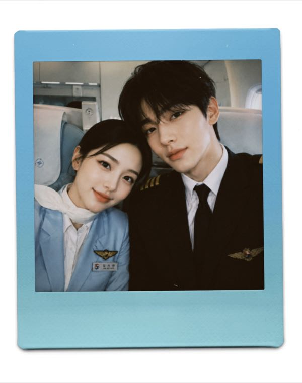
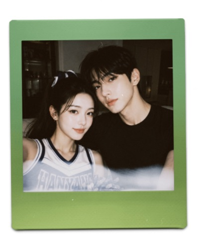
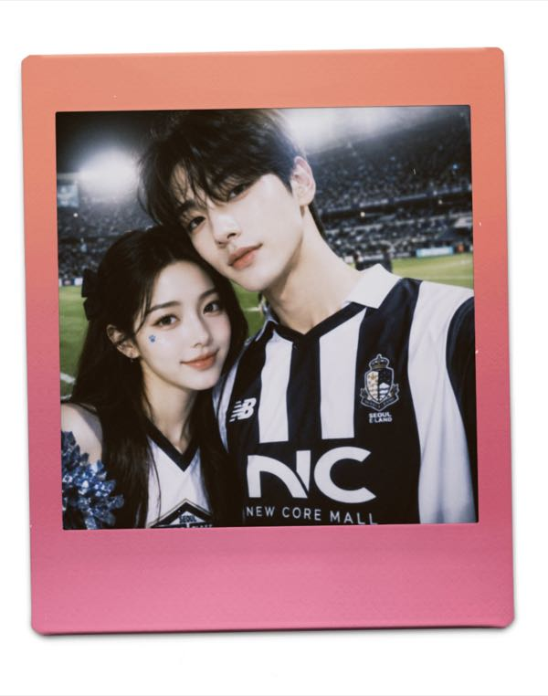
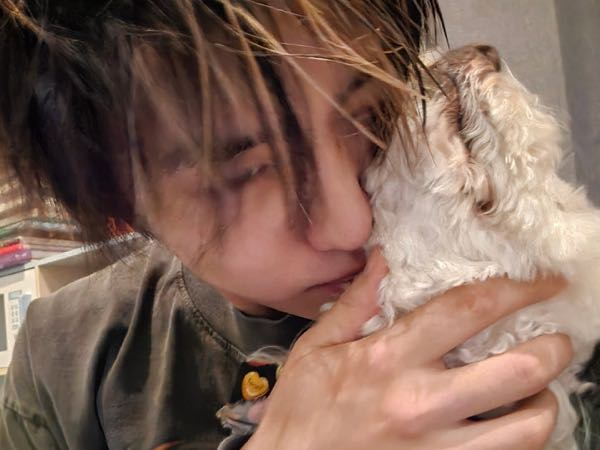
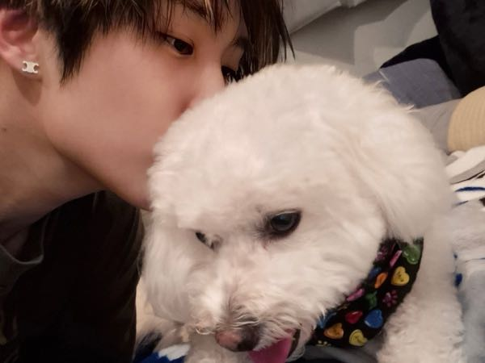
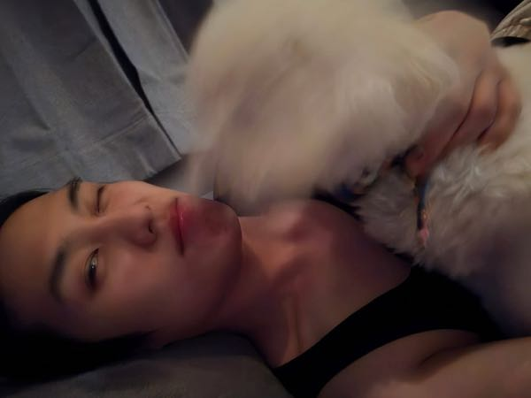
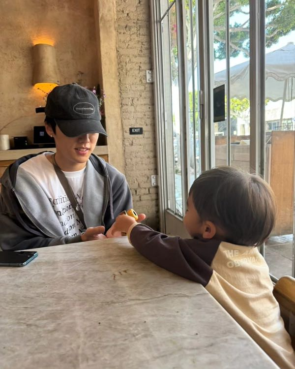

<!DOCTYPE html>
<html lang="zh-CN">
<head>
<meta charset="UTF-8">
<meta name="viewport" content="width=device-width, initial-scale=1.0">
<title>THE B HOUSE - 换乘恋爱</title>
<style>
*{margin:0;padding:0;box-sizing:border-box}
@keyframes fadeIn{from{opacity:0;transform:translateY(8px)}to{opacity:1;transform:translateY(0)}}
@keyframes fadeUp{from{opacity:0;transform:translateY(20px)}to{opacity:1;transform:translateY(0)}}
@keyframes pulse{0%,100%{opacity:0.4}50%{opacity:1}}
@keyframes popIn{from{opacity:0;transform:scale(0.9)}to{opacity:1;transform:scale(1)}}
@keyframes nightIn{from{opacity:0;transform:scale(1.05)}to{opacity:1;transform:scale(1)}}
body{background:#0a0a12;display:flex;justify-content:center;align-items:center;min-height:100vh;font-family:"PingFang SC","Noto Serif SC",serif;padding:20px}
.phone{width:380px;height:700px;background:#161820;border-radius:28px;padding:10px;box-shadow:0 16px 48px rgba(0,0,0,0.5);border:2px solid #22242c;position:relative}
.screen{width:100%;height:100%;background:#0e0f16;border-radius:20px;overflow:hidden;position:relative}
.view{position:absolute;inset:0;overflow-y:auto;background:#0e0f16;border-radius:20px;z-index:1;animation:fadeIn .35s ease}
.day-title-wrap{display:flex;flex-direction:column;align-items:center;justify-content:center;height:100%;text-align:center}
.day-num{font-size:56px;color:#d8ccb8;font-weight:300;letter-spacing:8px;animation:fadeUp .6s ease}
.day-divider{width:40px;height:1px;background:rgba(200,170,130,0.4);margin:16px auto;animation:fadeUp .6s ease .1s both}
.day-sub{font-size:10px;color:rgba(255,255,255,0.2);letter-spacing:3px;animation:fadeUp .6s ease .2s both}
.day-credit{font-size:8px;color:rgba(255,255,255,0.25);letter-spacing:1px;margin-top:30px;animation:fadeUp .6s ease .3s both;text-align:center;line-height:2}
.day-tap{font-size:10px;color:rgba(255,255,255,0.12);letter-spacing:2px;margin-top:40px;animation:pulse 2s ease infinite}
.night-wrap{min-height:100%;display:flex;flex-direction:column;align-items:center;justify-content:center;text-align:center;padding:40px 20px;animation:nightIn .5s ease}
.night-icon{font-size:48px;margin-bottom:20px}
.night-title{font-size:16px;color:#d8ccb8;letter-spacing:4px;font-weight:300;margin-bottom:20px}
.night-rules{font-size:11px;color:rgba(255,255,255,0.3);line-height:2.2;margin-bottom:24px;max-width:280px}
.night-rules em{color:rgba(200,160,120,0.6);font-style:normal}
.letter-page{min-height:100%;display:flex;flex-direction:column;padding:30px 24px}
.letter-to{font-size:11px;color:rgba(200,170,130,0.6);letter-spacing:2px;margin-bottom:24px}
.letter-body{flex:1;font-size:13px;color:rgba(255,255,255,0.55);line-height:2.2;letter-spacing:0.5px;white-space:pre-line}
.letter-photo{width:100%;max-height:180px;object-fit:cover;border-radius:8px;margin:12px 0;opacity:0.85;border:1px solid rgba(255,255,255,0.06)}
.letter-from{text-align:right;font-size:12px;color:rgba(255,255,255,0.3);margin-top:20px;letter-spacing:1px}
.letter-actions{display:flex;gap:8px;justify-content:center;padding:16px 0 8px}
.narr-wrap{min-height:100%;display:flex;flex-direction:column;justify-content:center;padding:40px 24px}
.narr-scene{font-size:10px;color:rgba(200,170,130,0.4);letter-spacing:2px;margin-bottom:16px;text-align:center}
.narr-text{font-size:13px;color:rgba(255,255,255,0.5);line-height:2.1;letter-spacing:0.4px;text-align:center;max-width:320px;align-self:center}
.narr-text em{color:rgba(200,160,120,0.7);font-style:normal}
.choices-wrap{padding:16px 0 0;display:flex;flex-direction:column;gap:8px;align-self:center;width:100%;max-width:320px}
.choice-btn{padding:12px 16px;border-radius:10px;border:1px solid rgba(255,255,255,0.08);font-size:12px;color:rgba(255,255,255,0.4);text-align:center;letter-spacing:0.4px;cursor:pointer;transition:.2s;background:rgba(255,255,255,0.02);line-height:1.5}
.choice-btn:hover{border-color:rgba(180,150,110,0.4);color:rgba(255,255,255,0.65)}
.choice-btn.pick{border-color:rgba(180,150,110,0.5);background:rgba(180,150,110,0.08);color:#c8a870}
.tap-hint{text-align:center;font-size:10px;color:rgba(255,255,255,0.12);letter-spacing:2px;padding:16px 0;cursor:pointer;margin-top:8px}
.react-wrap{min-height:100%;display:flex;flex-direction:column;align-items:center;justify-content:center;padding:40px 24px;text-align:center}
.react-icon{font-size:36px;margin-bottom:16px;animation:popIn .3s ease}
.react-text{font-size:13px;color:rgba(255,255,255,0.5);line-height:2;max-width:280px;margin-bottom:24px}
.react-aff{font-size:11px;color:rgba(200,170,130,0.5);line-height:1.8;margin-bottom:8px}
.react-aff .up{color:#8ab4a0}.react-aff .down{color:#c08080}.react-aff .same{color:rgba(255,255,255,0.2)}
.sms-top{padding:14px 16px;border-bottom:1px solid rgba(255,255,255,0.05);display:flex;align-items:center;gap:8px}
.sms-top .title-sms{font-size:12px;color:rgba(255,255,255,0.4);letter-spacing:1px}
.sms-top .badge-sms{margin-left:auto;font-size:9px;padding:3px 8px;border-radius:8px;background:rgba(180,150,100,0.12);color:rgba(200,170,130,0.5)}
.sms-log{flex:1;padding:16px 14px;overflow-y:auto;display:flex;flex-direction:column;gap:10px}
.sms-sys{font-size:9px;color:rgba(255,255,255,0.13);letter-spacing:2px;padding:3px 10px;text-align:center}
.sms-time{font-size:9px;color:rgba(255,255,255,0.25);text-align:center}
.sms-bub{max-width:82%;padding:10px 14px;border-radius:14px;font-size:12px;line-height:1.8}
.sms-bub.her{align-self:flex-end;background:rgba(180,150,110,0.1);color:rgba(255,255,255,0.55);border-bottom-right-radius:4px}
.sms-bub.him{align-self:flex-start;background:#181a24;color:rgba(255,255,255,0.45);border-bottom-left-radius:4px}
.sms-bub.narr{align-self:stretch;background:transparent;color:rgba(255,255,255,0.4);font-size:12px;line-height:2;padding:6px 4px;max-width:100%;border-radius:0}
.sms-report{text-align:center;padding:8px 14px;border-radius:8px;background:rgba(200,70,50,0.05);border:1px solid rgba(200,70,50,0.1);font-size:10px;color:rgba(255,255,255,0.2);line-height:1.6}
.sms-report b{color:rgba(200,140,130,0.5);font-weight:400;display:block}
.aff-overlay{position:absolute;inset:0;display:flex;align-items:center;justify-content:center;z-index:20;pointer-events:none}
.aff-popup{background:#1a1c26;border:1px solid rgba(200,170,130,0.3);border-radius:14px;padding:16px 20px;text-align:center;animation:popIn .3s ease;box-shadow:0 8px 32px rgba(0,0,0,0.5);pointer-events:auto}
.aff-popup .aff-title{font-size:10px;color:rgba(200,170,130,0.5);letter-spacing:2px;margin-bottom:10px}
.aff-popup .aff-row{display:flex;align-items:center;gap:10px;justify-content:center;margin:4px 0;font-size:12px}
.aff-popup .aff-name{color:rgba(255,255,255,0.5);min-width:70px;text-align:right}
.aff-popup .aff-change{font-weight:600;min-width:50px}
.aff-popup .aff-change.up{color:#8ab4a0}.aff-popup .aff-change.down{color:#c08080}
.aff-popup .aff-tap{font-size:9px;color:rgba(255,255,255,0.15);margin-top:10px;cursor:pointer}
.end-cards{display:flex;gap:10px;flex-wrap:wrap;justify-content:center}
.end-card{width:140px;border-radius:12px;overflow:hidden;border:1px solid rgba(255,255,255,0.06)}
.end-card img{width:100%;height:170px;object-fit:cover;display:block}
.end-card .lbl{padding:6px;font-size:9px;color:rgba(255,255,255,0.3);text-align:center;background:#111119}
.end-card .badge{font-size:7px;color:#c8a870;padding:3px;text-align:center;background:#0a0a12;letter-spacing:1px}
.id-cards{display:flex;gap:14px;flex-wrap:wrap;justify-content:center}
.id-card{width:145px;padding:20px 12px;border-radius:14px;border:1px solid rgba(255,255,255,0.06);background:#111119;cursor:pointer;text-align:center;transition:.2s}
.id-card:hover{border-color:rgba(180,150,110,0.3)}
.id-card .emoji{font-size:36px;margin-bottom:8px}
.id-card .name{font-size:13px;color:#ccc;letter-spacing:1px}
.btn{padding:10px 22px;border-radius:8px;border:1px solid rgba(180,150,110,0.35);background:rgba(180,150,110,0.06);color:#c8a870;font-size:11px;cursor:pointer;letter-spacing:1px;transition:.2s;display:inline-block;text-decoration:none}
.btn:hover{background:rgba(180,150,110,0.16)}
.btn.primary{background:rgba(180,150,110,0.16);border-color:rgba(200,170,130,0.5)}

/* ── 论坛实时吐槽 ── */
.forum-header{padding:14px 16px;border-bottom:1px solid rgba(255,255,255,0.06);display:flex;align-items:center;gap:10px;position:sticky;top:0;background:#0e0f16;z-index:5}
.forum-header .live-dot{width:8px;height:8px;border-radius:50%;background:#e04040;animation:forumPulse 1.5s ease infinite}
@keyframes forumPulse{0%,100%{opacity:1}50%{opacity:0.3}}
.forum-header .f-title{font-size:13px;color:#d8ccb8;letter-spacing:1px;font-weight:300}
.forum-header .f-badge{margin-left:auto;font-size:9px;padding:3px 8px;border-radius:8px;background:rgba(220,60,60,0.12);color:rgba(240,120,120,0.6)}
.forum-header .f-sub{font-size:9px;color:rgba(255,255,255,0.15);letter-spacing:1px;display:block;margin-top:2px}
.f-post{padding:10px 14px;border-bottom:1px solid rgba(255,255,255,0.03);animation:fSlideIn .4s ease both}
.f-post.reply{margin-left:20px;padding-left:12px;border-left:2px solid rgba(200,170,130,0.25);border-bottom:none;padding-top:8px;padding-bottom:8px}
@keyframes fSlideIn{from{opacity:0;transform:translateX(-8px)}to{opacity:1;transform:translateX(0)}}
.f-head{display:flex;align-items:center;gap:8px;margin-bottom:5px}
.f-av{width:22px;height:22px;border-radius:50%;display:flex;align-items:center;justify-content:center;font-size:11px;color:#fff}
.f-av.a0{background:#6b8fa0}.f-av.a1{background:#a07b6b}.f-av.a2{background:#8a9e6b}.f-av.a3{background:#9b6b8a}
.f-av.a4{background:#c08060}.f-av.a5{background:#6b8e9b}.f-av.a6{background:#a0a060}.f-av.a7{background:#806b9b}
.f-uid{font-size:10px;color:rgba(255,255,255,0.5);letter-spacing:0.5px}
.f-uid.op{color:rgba(200,160,120,0.7)}
.f-time{font-size:8px;color:rgba(255,255,255,0.12);margin-left:4px}
.f-like{font-size:9px;color:rgba(255,255,255,0.15);display:flex;align-items:center;gap:3px;margin-top:4px}
.f-like.liked{color:rgba(200,160,120,0.6)}
.f-body{font-size:11px;color:rgba(255,255,255,0.45);line-height:1.7;letter-spacing:0.3px}
.f-divider{text-align:center;padding:10px 0;font-size:9px;color:rgba(255,255,255,0.08);letter-spacing:2px}
.f-views{font-size:9px;color:rgba(255,255,255,0.15);text-align:center;padding:6px 0;border-bottom:1px solid rgba(255,255,255,0.03);margin-bottom:8px}

.save-wrap{min-height:100%;display:flex;flex-direction:column;align-items:center;justify-content:center;padding:30px 20px;text-align:center}
.save-title{font-size:14px;color:#d8ccb8;letter-spacing:2px;font-weight:300;margin-bottom:16px}
.save-code,.save-input{width:100%;max-width:300px;min-height:50px;background:#111119;border:1px solid rgba(200,170,130,0.3);border-radius:10px;color:rgba(255,255,255,0.6);font-size:11px;padding:12px;resize:none;text-align:center;word-break:break-all;margin-bottom:10px;line-height:1.6;font-family:monospace}
.save-hint{font-size:10px;color:rgba(255,255,255,0.2);margin-bottom:20px;line-height:1.6}
.save-err{font-size:10px;color:#c08080;margin-bottom:8px;display:none}
</style>
</head>
<body>
<div class="phone" id="phone"><div class="screen" id="screen"></div></div>
<div class="aff-overlay" id="affOverlay" style="display:none"><div class="aff-popup" id="affPopup"></div></div>
<script>
// GAME STATE
var G={id:'',day:1,aff:{},affH:{},turn:{},exTo:{},meTo:{},_cb:null};
var S_=document.getElementById('screen'),AO=document.getElementById('affOverlay'),AP=document.getElementById('affPopup');

function V(h){S_.innerHTML='<div class="view">'+h+'</div>';}
function Q(id){return document.getElementById(id);}
function Mn(id){return DATA[G.id].ms.find(function(m){return m.id===id;});}
function AL(v){return v>=70?'❤️❤️❤️':v>=50?'❤️❤️':v>=30?'❤️':'🤍';}

var DATA={
fa:{p:{n:'你',a:26},x:{n:'李柱延',id:'jy',a:30,e:'✈️'},ms:[{id:'jy',n:'李柱延',a:30,e:'✈️',x:1},{id:'hj',n:'李贤在',a:27,e:'🩺',x:0},{id:'jb',n:'裴俊英',a:28,e:'📷',x:0},{id:'er',n:'孙英宰',a:23,e:'🏀',x:0}],fD:'<b>姜宥真</b>：外向主动，大大咧咧实则敏感，很会撒娇。笑的时候右手会攥紧杯柄。<br><br><b>徐敏荷</b>：冷静理性，话不多，气场强。不主动但很有存在感，不笑的时候像杂志模特。<br><br><b>朴瑞妍</b>：温柔文艺，说话轻声细语，容易让人有保护欲。及腰黑长直，皮肤白得几乎透明。',mt:'你们在培训上认识。他是试飞学员，你是实习乘务员。模拟舱那天，他坐你斜对面，看到你紧张到发抖，悄悄给你递来一只水。',bu:'分手是你提的。五年了，他从来不表达爱你，而他身边又有太多莺莺燕燕。聚少离多让你们的争吵越来越多，你累了。也许还是爱的，但爱他让你太累了。',ph:'THE_B_HOUSE_assets/8b511c18gy1h8vgemc76sj20xc0xcajc.jpg',lp:'我的X是一个很慢热的人\n偶尔也会冷不丁地吐槽\n\nX走路慢慢的\n说话慢慢的\n\nX玩狼人杀的时候总是傻傻相信别人的话\n并不是X不够聪明\n而是因为X是善良的人\n\nX从来不对我说谎\n即使很受欢迎\n也从来不会把这当回事\n\nX很会关心别人\n但是不喜欢邀功\n\nX的幽默不难懂\n只是需要点耐心\n\nX情绪不好的时候不会说话\n只要抱抱他就好了\n\n如果X在这里遇到谁\n希望那个人能看懂X的顺手\n也能理解他的安静',le:'X总说我记不住事\n但关于X的事\n我常常会突然想起来\n然后愣住\n\nX第一次来我家\n带了一盆薄荷\n\nX有些怕生\n给人的第一印象就像薄荷一样冰凉\n但熟悉X的人会知道\nX其实像夏天的冰块一样让人舒心\n\nX很有主见\n是那种会让人放心的人\n但在恋人面前的X\n也会像小孩子一样撒娇\n\n和X在一起\n每天都能看到不一样可爱的她\n是男朋友的幸运\n\nX不太笑\n但笑起来左边先翘\n她自己不知道\n\nX喜欢热的东西\n热汤，热咖啡\n还有活泼的、热烈的心\nX值得世界上最好、最温暖的一切'},
ch:{p:{n:'李贞',a:24},x:{n:'裴俊英(Jacob)',id:'jb',a:27,e:'💼'},ms:[{id:'jb',n:'裴俊英(Jacob)',a:27,e:'💼',x:1},{id:'hj',n:'李贤在',a:26,e:'🪖',x:0},{id:'yh',n:'金泳勋',a:28,e:'🌐',x:0},{id:'er',n:'孙英宰(Eric)',a:25,e:'⚽',x:0}],fD:'<b>女A·律师</b>：成熟型。气场强，不卑不亢，递东西的动作像递名片。<br><br><b>女B·编剧</b>：温柔型。声音软软的，会帮人摆盘子，容易被靠近。<br><br><b>女C·外科医生</b>：成熟型。话不多但每句都精准，习惯把手机扣在床头柜上。',mt:'他是你朋友的哥哥。第一次见面是高中，在朋友家客厅。他从学校回来，手里提着便利店袋子。那段时间你经常去朋友家写作业，他对你特别好，总是很温柔，满足了你小时候对哥哥的幻想。',bu:'分手是他提的。他希望你能找一份“稳定”的工作，而不是随着比赛到处飞。他说他养得起你，可他心里也清楚，你并不是一个甘心留在家里等他的人。',ph:'THE_B_HOUSE_assets/SaveClip.App_564259307_17974045274954379_9160089034478819477_n.jpg',lp:'Jacob是我见过最聪明的男人\n也是最贴心的男人\n\nX是我朋友的哥哥\n从小是优等生的X\n尽管工作很忙\n也注重家庭与身边的人\n\n出去吃饭\nX会记得身边的人忌口\n朋友的生日\nX也会准备好礼物提前送去\n\nX的父母也很亲切\n也许正是这样温暖的家庭\n才会培养出X一样天使般善良的人\n\n作为恋人的X 还要更加美好\n是在X的照料下\n我学会变成一个靠谱、不冷漠的人\n\n任何人靠近X\n都会明白我所说一切\n\n我真心希望X能够幸福\n比任何人都幸福',le:'我所认识的X\n既有孩童的天真烂漫\n也有作为女人的成熟与美好\n\nX对恋人非常坦率\n脱口而出的话语能让我幸福很久\n\nX是一个非常会表达爱的人\n\nX很受欢迎\n我周围所有的男生都认识X\n但X从来不会让我感觉不安全\n\nX是善良又有边界的人\n\n能成为X的恋人\n是我的幸运\n\n第一次见到X的时候\n她戴着软昵帽\n有着大大的眼睛\n\n这样的X\n是我记忆里见过最美丽的人'}};

function iAff(){G.aff={};G.affH={};G.turn={};DATA[G.id].ms.forEach(function(m){G.aff[m.id]=m.x?40:30;G.affH[m.id]=[G.aff[m.id]];G.turn[m.id]=false;});}
function cA(id,d){if(!G.turn[id]){G.aff[id]=Math.max(0,Math.min(100,G.aff[id]+d));G.affH[id].push(G.aff[id]);}}
function tCheck(){var ms=[];DATA[G.id].ms.forEach(function(m){if(m.x||G.turn[m.id])return;var h=G.affH[m.id];if(h.length>=3&&h[h.length-1]<=h[h.length-2]&&h[h.length-2]<=h[h.length-3]){G.turn[m.id]=true;ms.push(m.e+' '+m.n+' 开始注意其他女嘉宾');}});return ms;}
function gC(){var cs=[];DATA[G.id].ms.forEach(function(m){var h=G.affH[m.id];cs.push({id:m.id,d:h.length>=2?h[h.length-1]-h[h.length-2]:0});});return cs;}
function aPop(cs,fn){var h='<div class="aff-title">✦ 好感度变化 ✦</div>';var any=false;cs.forEach(function(c){if(c.d===0)return;any=true;var m=Mn(c.id);h+='<div class="aff-row"><span class="aff-name">'+m.e+' '+m.n+'</span><span class="aff-change '+(c.d>0?'up':'down')+'">'+(c.d>0?'+':'')+c.d+'</span><span style="font-size:10px;color:rgba(255,255,255,0.2)">'+AL(G.aff[c.id])+'</span></div>';});if(!any)h+='<div style="font-size:10px;color:rgba(255,255,255,0.15)">好感度无明显变化</div>';h+='<div class="aff-tap">点击继续</div>';AP.innerHTML=h;AO.style.display='flex';AP.onclick=function(){AO.style.display='none';if(fn)fn();};}
function DT(n,fn){G._cb=fn;V('<div class="day-title-wrap" onclick="G._cb()"><div class="day-num">DAY '+n+'</div><div class="day-divider"></div><div class="day-sub">'+(n===1?'第一天 · 入住日':n===2?'第二天 · 暧昧萌芽':n===3?'第三天 · 匿名约会':'第'+n+'天')+'</div><div class="day-tap">点击任意处继续</div><div style="margin-bottom:10px"><span class="btn" onclick="event.stopPropagation();expS()" style="font-size:9px;padding:6px 14px;border-color:rgba(255,255,255,0.06);color:rgba(255,255,255,0.2)">💾 导出存档</span></div><div class="day-credit">创作by抖音 妈妈我真有首尔病<br>持续施工中 关注作者以免错失新剧情</div></div>');}

var _glI=0;var _glP=[];var _glC=[];var _glFn=null;
function _glInit(photos,captions,nextFn){_glI=0;_glP=photos;_glC=captions;_glFn=nextFn;_glShow();}
function _glShow(){var i=_glI;var total=_glP.length;
  if(i>=total){if(_glFn)_glFn();return;}
  var h='<div style="min-height:100%;display:flex;flex-direction:column;align-items:center;justify-content:center;padding:24px 20px;text-align:center">';
  h+='<div style="font-size:9px;color:rgba(200,170,130,0.4);letter-spacing:2px;margin-bottom:10px">✉ 你写给李柱延 · '+(i+1)+'/'+total+'</div>';
  h+='';
  h+='<div style="font-size:13px;color:rgba(255,255,255,0.55);line-height:2.2;max-width:300px;white-space:pre-line">'+_glC[i]+'</div>';
  if(i<total-1){h+='<div class="tap-hint" onclick="_glI++;_glShow()">点击翻下一张 →</div>';}
  else{h+='<div class="tap-hint" onclick="_glI++;_glShow()">▼ 点击继续</div>';}
  h+='</div>';V(h);}

function lP(next){var d=DATA[G.id];
  if(G.id==='fa'){
    G._cb=next;
    _glInit(['008t9qsRly1hpke4b9vtbj30u012k4an.jpg','IMG_0483.JPG','007e04Q1gy1hoi5yavnvkj30u011hwo5.jpg','008t9qsRly1hpke5vhek8j30u011e11f.jpg','008t9qsRly1hpke4cf5ifj30zk1bfn2f.jpg'],['我的X是一个很慢热的人\n偶尔也会冷不丁地吐槽\nX走路慢慢的 说话慢慢的','X玩狼人杀的时候总是傻傻相信别人的话','并不是X不够聪明\n而是因为X是善良的人','X从来不对我说谎\n即使很受欢迎\n也从来不会把这当回事','我真心希望X能够幸福\n比任何人都幸福'],next);
  }else{
    G._cb=next;V('<div class="letter-page"><div class="letter-to">✉ 致 '+d.x.n+' · 你的介绍信</div><div class="letter-body">'+d.lp+'</div><div class="letter-from">—— 你</div><div class="letter-actions"><span class="btn" onclick="G._cb()">翻看他的信 →</span></div></div>');
  }
}
function lE(next){var d=DATA[G.id];G._cb=next;V('<div class="letter-page"><div class="letter-to">✉ 来自 '+d.x.n+' · 写给你的介绍信</div><div class="letter-body">'+d.le+'</div><div style="font-size:10px;color:rgba(255,255,255,0.2);line-height:1.8;margin:14px 0;padding:14px 0;border-top:1px solid rgba(255,255,255,0.05);"><b style="color:rgba(255,255,255,0.4)">相识</b> '+d.mt+'<br><br><b style="color:rgba(255,255,255,0.4)">分手</b> '+d.bu+'</div><div class="letter-from">—— '+d.x.n+'</div><div class="letter-actions"><span class="btn primary" onclick="G._cb()">走进小屋 →</span></div></div>');}
function C_(s,t,n,cs){var h='<div class="narr-wrap">';if(s)h+='<div class="narr-scene">'+s+'</div>';h+='<div class="narr-text">'+t+'</div>';if(cs&&cs.length){h+='<div class="choices-wrap">';cs.forEach(function(o){h+='<div class="choice-btn'+(o.p?' pick':'')+'" onclick="'+o.a+'">'+o.l+'</div>';});h+='</div>';}else if(n){G._cb=n;h+='<div class="tap-hint" onclick="G._cb()">点击继续</div>';}h+='</div>';V(h);}
var _i=0,_p=[],_s='',_n=null,_o=null;
function CP(s,p,n,o){_i=0;_p=p;_s=s;_n=n;_o=o||null;_sp();}
function _sp(){if(_i>=_p.length){if(_o){}else if(_n)_n();return;}var h='<div class="narr-wrap">';if(_s&&_i===0)h+='<div class="narr-scene">'+_s+'</div>';h+='<div class="narr-text">'+_p[_i]+'</div>';if(_i<_p.length-1){h+='<div class="tap-hint" onclick="_i++;_sp()">点击继续 ('+(_i+1)+'/'+_p.length+')</div>';}else{if(_o&&_o.length){h+='<div class="choices-wrap">';_o.forEach(function(o){h+='<div class="choice-btn'+(o.p?' pick':'')+'" onclick="'+o.a+'">'+o.l+'</div>';});h+='</div>';}else if(_n){G._cb=_n;h+='<div class="tap-hint" onclick="G._cb()">点击继续</div>';}}h+='</div>';V(h);}
function R_(i,t,n,cs){var c=gC();var h='<div class="react-wrap">';if(i)h+='<div class="react-icon">'+i+'</div>';h+='<div class="react-text">'+t+'</div>';if(c.some(function(x){return x.d!==0;})){h+='<div class="react-aff">';c.forEach(function(x){if(x.d===0)return;var m=Mn(x.id);var s=x.d>0?'up':'down';h+=m.e+' '+m.n+' <span class="'+s+'">'+(x.d>0?'+':'')+x.d+' '+AL(G.aff[x.id])+'</span><br>';});h+='</div>';}if(cs&&cs.length){h+='<div class="choices-wrap">';cs.forEach(function(o){h+='<div class="choice-btn'+(o.p?' pick':'')+'" onclick="'+o.a+'">'+o.l+'</div>';});h+='</div>';}else if(n){G._cb=n;h+='<div class="tap-hint" onclick="G._cb()">点击继续</div>';}h+='</div>';V(h);}
function NT(fn){V('<div class="night-wrap"><div class="night-icon">📱</div><div class="night-title">深夜匿名短信</div><div class="night-rules">✦ 你必须给一位男嘉宾发送一条短信<br>✦ 匿名，禁止署名，禁止直接告白<br>✦ 你会收到<em>「前任报告」</em><br>——你的前任今晚将短信发给了谁<br>✦ 你的前任也会知道<em>你选择了谁</em><br>✦ 除短信外，嘉宾间不可私下联络</div><div class="tap-hint" onclick="'+fn.name+'()">进入收件箱 →</div></div>');}
function sV(t,b){V('<div class="sms-top"><span class="title-sms">'+t+'</span><span class="badge-sms">'+b+'</span></div><div class="sms-log" id="smsLog"></div>');}
function ss(t){var l=Q('smsLog');if(!l)return;var d=document.createElement('div');d.className='sms-sys';d.textContent=t;l.appendChild(d);l.scrollTop=l.scrollHeight;}
function st(t){var l=Q('smsLog');if(!l)return;var d=document.createElement('div');d.className='sms-time';d.textContent=t;l.appendChild(d);l.scrollTop=l.scrollHeight;}
function sb(t,s){var l=Q('smsLog');if(!l)return;var d=document.createElement('div');d.className='sms-bub '+s;d.innerHTML=t.replace(/\\n/g,'<br>');l.appendChild(d);l.scrollTop=l.scrollHeight;}
function sn_(t){var l=Q('smsLog');if(!l)return;var d=document.createElement('div');d.className='sms-bub narr';d.innerHTML=t;l.appendChild(d);l.scrollTop=l.scrollHeight;}
function sr_(t){var l=Q('smsLog');if(!l)return;var d=document.createElement('div');d.className='sms-report';d.innerHTML=t;l.appendChild(d);l.scrollTop=l.scrollHeight;}
function sa(cs){var l=Q('smsLog');if(!l)return;var d=document.createElement('div');d.className='choices-wrap';cs.forEach(function(o){var b=document.createElement('div');b.className='choice-btn'+(o.p?' pick':'');b.textContent=o.l;b.onclick=o.a;d.appendChild(b);});l.appendChild(d);l.scrollTop=l.scrollHeight;}

var _forumDay=0;var _forumNext=null;
var F={
d1:[
{uid:'롸롸롸',av:0,time:'23:51',body:'柱延真的很看不透啊..到底是女四不是他的菜还是在紧张避嫌啊啊啊',likes:37},
{uid:'에릭좋아',av:1,time:'23:52',body:'这个孙英宰咋这么萌！！',likes:52,liked:true},
{uid:'눈호강',av:2,time:'23:53',body:'这季的男嘉宾对我眼睛很友好TT',likes:44},
{uid:'현재앓이',av:3,time:'23:54',body:'李贤在这样真能找到女朋友吗。。服',likes:28},
{uid:'ㅇㅇ',av:4,time:'23:55',body:'楼上的 女四写的挑衅 他俩不会是对抗路x吧',reply:true,likes:19},
{uid:'분석왕',av:5,time:'23:56',body:'挑衅也有可能是李柱延吧 他一句话没说 完全忽视啊',reply:true,likes:31},
{uid:'ㅎㅎ',av:6,time:'23:57',body:'Jacob太好人了吧 唯一帮拿箱子的绅士nim',likes:46},
],
d3:[
{uid:'썸연구소',av:0,time:'23:48',body:'女四为什么要放和前任的东西啊，任谁都知道对x还有迷恋啊',likes:63},
{uid:'지나가던',av:5,time:'23:49',body:'也有可能是想彻底做个了断吧',reply:true,likes:41},
{uid:'ㅇㅇ',av:4,time:'23:50',body:''},
{uid:'절대닫혀',av:7,time:'23:51',body:'jacob和女四锁了吧 她都放x的机票了 他居然还选',likes:55},
{uid:'ㅠㅠㅠ',av:1,time:'23:52',body:'如果柱延可以先选的话，应该肯定也会选机票吧，哭',likes:38},
{uid:'분석왕',av:5,time:'23:53',body:'他如果真心想要，完全可以提出来啊，但他没有',reply:true,likes:22},
{uid:'입틀막',av:3,time:'23:54',body:'李柱延居然是女四的x。。前面根本没看出来',likes:89},
{uid:'룸메이트',av:6,time:'23:55',body:'你不觉得公共区域只有他对女四很冷淡吗',reply:true,likes:47},
{uid:'ㅇㅇ',av:4,time:'23:56',body:'对对对 他对女四一句话都没说过',reply:true,likes:35},
{uid:'열받아',av:0,time:'23:57',body:'好渣。。女四独美',likes:71},
],
c1:[
{uid:'눈치왕',av:1,time:'23:51',body:'李贤在和女A为什么单独去客厅了 偷偷藏不住',likes:42},
{uid:'축구팬',av:2,time:'23:52',body:'妈呀 这不是热刺的Eric吗。。他居然来上恋综了，不用训练的吗',likes:68},
{uid:'ㅇㅇ',av:4,time:'23:53',body:'不懂就问 他这是要退役了吗',reply:true,likes:15},
{uid:'정보통',av:5,time:'23:54',body:'没有吧 他才刚转会',reply:true,likes:38},
{uid:'얼빠',av:6,time:'23:55',body:'金泳勋好帅啊ww我要做他的颜狗',likes:55},
{uid:'응원단장',av:7,time:'23:56',body:'女二是啦啦队的吧 好像之前看过她表演',likes:31},
{uid:'ㅇㅇ',av:4,time:'23:57',body:'保真吗 那她和eric肯定是前任吧',reply:true,likes:27},
{uid:'분석왕',av:5,time:'23:58',body:'但这俩人看起来不熟啊 你会对前任这么殷勤吗',reply:true,likes:44},
{uid:'서프라이즈',av:0,time:'23:59',body:'没想到女B看着小白花 居然这么反差',likes:19},
{uid:'월급루팡',av:3,time:'00:01',body:'听说这季有三星职员哦kkk工资很高的',likes:33},
{uid:'현실적',av:6,time:'00:02',body:'打工人再高能比球星高吗',reply:true,likes:51},
],
c3:[
{uid:'군바라기',av:0,time:'23:48',body:'OMGGGGGG李贤在居然是特种兵 太酷了TT',likes:77},
{uid:'입덕완료',av:1,time:'23:49',body:'好喜欢女二宝宝 抱走',likes:46},
{uid:'월클의사',av:3,time:'23:50',body:'哇 女C居然是医生 这季全员高薪吧',likes:29},
{uid:'ㅇㅇ',av:4,time:'23:51',body:'有钱人只找有钱人date啦',reply:true,likes:22},
{uid:'정보통',av:5,time:'23:52',body:'thread有人扒出来金泳勋爸爸是外交官',likes:83},
{uid:'덕후',av:2,time:'23:53',body:'今天好修罗场 怎么所有人都在小屋',likes:35},
{uid:'댕댕이',av:6,time:'23:54',body:'孙英宰完全金毛啊嘿嘿',likes:58},
{uid:'따수미',av:7,time:'23:55',body:'金泳勋好细心 早上看女二没睡好还专门准备助眠的',likes:41},
{uid:'ㅠㅠ',av:1,time:'23:56',body:'呜呜呜好人一定要有好报啊',reply:true,likes:36},
]};

function showForum(day,rt,fn){
  if(!fn){fn=rt;rt='d';}
  var ps=F[rt+day];if(!ps){fn();return;}
  var title='EP.'+day+' 实时讨论楼';
  var views=day===1?'3,284':'5,617';
  var h='<div class="view"><div class="forum-header"><div class="live-dot"></div><div><span class="f-title">'+title+'</span><span class="f-sub">换乘恋爱4 · THE B HOUSE</span></div><span class="f-badge">LIVE</span></div><div style="padding:10px 14px"><div class="f-views">📺 实时讨论中 · '+views+' 次浏览 · '+ps.length+' 条评论</div>';
  for(var i=0;i<ps.length;i++){
    var p=ps[i];
    if(!p.body){h+='<div class="f-divider">— '+(i+1)+' —</div>';continue;}
    var liked=p.liked?' liked':'';
    h+='<div class="f-post'+(p.reply?' reply':'')+'" style="animation-delay:'+(i*0.05)+'s">';
    h+='<div class="f-head"><div class="f-av a'+p.av+'">'+p.uid[0]+'</div><span class="f-uid'+(i===0&&!p.reply?' op':'')+'">'+p.uid+'</span>';
    if(i===0&&!p.reply)h+='<span style="font-size:8px;color:rgba(200,160,120,0.4)">楼主</span>';
    h+='<span class="f-time">'+p.time+'</span></div>';
    h+='<div class="f-body">'+p.body+'</div>';
    h+='<div class="f-like'+liked+'">'+(p.liked?'❤️':'🤍')+' '+p.likes+'</div></div>';
  }
  h+='<div class="tap-hint" onclick="('+fn.toString()+')()">▼ 点击继续游戏</div></div></div>';
  V(h);
}

function expS(){
  var s={id:G.id,day:G.day+1,aff:G.aff};
  var code=btoa(encodeURIComponent(JSON.stringify(s)));
  var h='<div class="save-wrap"><div class="save-title">💾 导出存档</div>';
  h+='<textarea class="save-code" readonly onclick="this.select()">'+code+'</textarea>';
  h+='<div class="save-hint">复制上方存档码发到其他设备<br>粘贴即可恢复进度</div>';
  h+='<span class="btn" onclick="impS()">📥 导入存档</span>';
  h+='<span class="btn" style="margin-top:8px" onclick="G._cb?G._cb():showRules()">返回</span></div>';
  V(h);
}
function impS(){
  var h='<div class="save-wrap"><div class="save-title">📥 导入存档</div>';
  h+='<textarea class="save-input" id="impCode" placeholder="粘贴存档码..."></textarea>';
  h+='<div class="save-err" id="impErr">存档码无效</div>';
  h+='<span class="btn primary" onclick="_doImp()">确认</span>';
  h+='<span class="btn" style="margin-top:8px" onclick="G._cb?G._cb():showRules()">返回</span></div>';
  V(h);
}
function _doImp(){
  var el=document.getElementById('impCode');var er=document.getElementById('impErr');
  try{
    var s=JSON.parse(decodeURIComponent(atob(el.value.trim())));
    if(!s||!s.id||!s.aff){throw 0;}
    G.id=s.id;G.day=s.day;G.aff=s.aff;iAff();
    DT(s.day,window['d'+s.day]);
  }catch(e){er.style.display='block';}
}

// SCREENS
function showRules(){
  V('<div style="display:flex;flex-direction:column;align-items:center;justify-content:center;height:100%;padding:30px 24px;text-align:center"><div style="font-size:10px;letter-spacing:3px;color:rgba(255,255,255,0.15);margin-bottom:8px">换乘恋爱 · 酸涩版</div><div style="font-size:20px;color:#d8ccb8;font-weight:300;letter-spacing:4px;margin-bottom:4px">THE B HOUSE</div><div style="font-size:10px;color:rgba(255,255,255,0.15);letter-spacing:3px;margin-bottom:28px">4 MEN · 4 WOMEN · 10 DAYS</div><div style="max-width:300px;text-align:left;font-size:12px;color:rgba(255,255,255,0.4);line-height:2.2"><p>✈️ <b style="color:rgba(255,255,255,0.6)">你和你的前任，都是嘉宾。</b>你们分手了，但住在同一栋房子里。不能表现出你们认识。</p><p style="margin-top:12px">📱 <b style="color:rgba(255,255,255,0.6)">每晚一条匿名短信。</b>你可以发给他，也可以不。但你总会收到一条通知：「你的前任将短信发给了______」</p><p style="margin-top:12px">👥 <b style="color:rgba(255,255,255,0.6)">他不是只看着你。</b>三位女嘉宾会主动。三位新男嘉宾也在靠近你。</p><p style="margin-top:12px">🎯 <b style="color:rgba(255,255,255,0.6)">Day 10，最终选择。</b>走向一个人，或不走向任何人。</p></div><div style="font-size:11px;color:rgba(200,150,100,0.4);line-height:1.8;margin:20px 0;font-style:italic">第一天。他收到了你的前任通知。<br>你也收到了他的。<br><em style="color:#c8a870">他发给了别人。</em></div><span class="btn primary" onclick="showEndings()">继续</span><span class="btn" onclick="impS()" style="margin-top:8px">📥 导入存档</span></div>');
}

function showEndings(){
  V('<div style="display:flex;flex-direction:column;align-items:center;padding:24px 20px;text-align:center"><div style="font-size:14px;color:#d8ccb8;letter-spacing:2px;font-weight:300;margin-bottom:4px">结局图鉴</div><div style="font-size:10px;color:rgba(255,255,255,0.15);letter-spacing:2px;margin-bottom:20px">✦ 以下为人工校对版本，推荐先玩 ✦</div><div class="end-cards"><div class="end-card"><div class="badge">✦ 人工校对 ✦</div><div class="lbl">空姐 × 飞行员<br>李柱延</div></div><div class="end-card"><div class="badge">✦ 人工校对 ✦</div><div class="lbl">啦啦队 × 特种兵<br>李贤在</div></div><div class="end-card"><div class="badge">✦ 人工校对 ✦</div><div class="lbl">啦啦队 × 运动员<br>Eric</div></div></div><div style="margin-top:16px;font-size:10px;color:rgba(255,255,255,0.2);line-height:1.6">其他支线为AI生成，可能AI感较重<br>推荐先体验人工校对过的剧情线</div><span class="btn primary" style="margin-top:18px" onclick="showIdSelect()">选择身份</span></div>');
}

function showIdSelect(){
  V('<div style="display:flex;flex-direction:column;align-items:center;justify-content:center;padding:24px;text-align:center"><div style="font-size:16px;color:#d8ccb8;letter-spacing:2px;font-weight:300;margin-bottom:6px">选择你的身份</div><div style="font-size:10px;color:rgba(255,255,255,0.15);letter-spacing:3px;margin-bottom:24px">点击卡片查看详情</div><div class="id-cards"><div class="id-card" onclick="pId(\'fa\')"><div class="emoji">✈️</div><div class="name">大韩航空空乘</div><div style="font-size:9px;color:rgba(255,255,255,0.15);margin-top:4px">26岁 · 有主见</div></div><div class="id-card" onclick="pId(\'ch\')"><div class="emoji">📣</div><div class="name">啦啦队队员</div><div style="font-size:9px;color:rgba(255,255,255,0.15);margin-top:4px">24岁 · 可爱·回避型</div></div></div><div id="pB" style="margin-top:16px;width:100%;max-width:300px"></div></div>');
}

function pId(k){var d=DATA[k];Q('pB').innerHTML='<div style="background:#111119;border-radius:12px;padding:14px;border:1px solid rgba(180,150,110,0.25);text-align:center"><div style="font-size:13px;color:#d8ccb8;margin-bottom:4px">你的前任：<b style="color:rgba(255,255,255,0.7)">'+d.x.n+'</b></div><div style="font-size:10px;color:rgba(255,255,255,0.3);line-height:1.8;margin-bottom:8px">男嘉宾：'+d.ms.filter(function(m){return !m.x;}).map(function(m){return m.n;}).join(' / ')+'</div><span class="btn primary" onclick="sGame(\''+k+'\')">选择此身份</span></div>';}

function sGame(k){G.id=k;G.day=1;iAff();lP(function(){lE(function(){DT(1,d1);});});}

function d1(){G.day=1;if(G.id==='fa')d1a();else d1c();}

// === AIRLINE DAY 1 ===
function d1a(){
  CP('✦ 晨间镜头 · 入场 ✦',[
    '上午十一点半。你最后一个到，其他人已完成入住——昨晚航班延误了四个小时，你几乎没睡。拖着行李箱进门的时候，地毯上已经坐了一圈人。<br><br>屋里的人陆续抬头。七个陌生人，一个是曾经最熟悉的。',
    DATA[G.id].fD,
    '“迟到晚上要做饭喔。”<br><br>李贤在笑着从二楼下来，刚洗完澡，头发还湿着。<br><br>李柱延坐在单人沙发里，手里转着一杯水。他没开口，但目光落在你行李箱贴纸上——那是你们以前一起去东京时买的。',
    'Eric从厨房探出头，煎蛋铲还在手里。“不用担心！我已经在做啦！”他笑起来有点犬齿，T恤穿反了。<br><br>裴俊英靠在玄关柜子旁，从你手里接过行李箱。“二楼还有空房间，”他轻声说。'
  ],d1a_t);}
function d1a_t(){
  C_('✦ 任务 · 第一印象信封 ✦','主持人：“在卡片上写下对在场四位异性的第一印象。一个词。”<br><br>你写下：沉着 / 温柔 / 萌 / 挑衅<br><br>主持人抽取到「对某位男嘉宾的印象：<em>挑衅</em>。」<br><br>客厅安静了一秒。李柱延坐在角落，目光落在那张卡片上，看了很久。',d1a_ex);}
function d1a_ex(){
  C_('✦ 夜晚 · EX 事件 ✦','晚上，客厅放一部老电影。你坐在沙发一角，李柱延坐在另一角，中间隔着两个人。<br><br>电影放到一半，你下意识摸了摸后颈——坐久了会僵。以前和他在一起的时候他会……你停住手。<br><br>五分钟后，一个靠垫从旁边递过来，垫在你腰后。<br><br>“垫着。沙发太软。”',d1a_h);}
function d1a_h(){C_('✦ 隐藏镜头 ✦','姜宥真在房间和徐敏荷聊天：“那个空姐，感觉不好接近，看着冷冷的。”<br><br>电影结束后，李柱延收拾靠垫。把你用过的那个单独放在一边，抱在怀里上了楼。<br><br>裴俊英在走廊看着你房间的灯亮了很久。Eric在厨房偷偷练煎蛋。朴瑞妍写日记，写一行划掉。',function(){NT(d1a_sms);});}
function d1a_sms(){
  sV('匿名短信','DAY 1 · 深夜');ss('✦ 今晚共有 4 条短信发送至 4 位女嘉宾 ✦');st('23:47');
  sb('今天一直在想一个词。','him');sb('你进门的时候，风铃响了。','him');ss('— 你收到了 2 条 —');
  sr_('⚡ 前任报告 ⚡<br>你的前任（李柱延）今晚将短信发给了<br><b>朴瑞妍</b>');sn_('没有你的名字。');
  sn_('像遇到晴空湍流，心突然失重了一秒。<br><br>为什么。这个人，连第一天的消息都不愿意发给我。');
  ss('✦ 你必须发出一条短信 ✦');
  sa([{l:'A. 发给李柱延：晚安',a:function(){d1a_s('jy','晚安')}},{l:'B. 发给裴俊英：白色很配你。',a:function(){d1a_s('jb','白色很配你。')}},{l:'C. 发给李贤在：明天你做饭吗',a:function(){d1a_s('hj','明天你做饭吗')}},{l:'D. 发给孙英宰：🍳很好吃',a:function(){d1a_s('er','🍳很好吃')}}]);}
function d1a_s(to,msg){G.meTo[1]=to;sV('匿名短信','DAY 1 · 深夜');
  if(to==='jb'){cA('jb',5);cA('jy',-3);}else if(to==='hj')cA('hj',5);else if(to==='er')cA('er',5);
  sb(msg,'her');sn_('发送成功。<br><br>你把手机翻了个面，扣在枕边。<br><br>窗外，一架飞机正在降落。起落架灯在夜空中划出两道平行线。');
  G.exTo[1]='朴瑞妍';sr_('⚡ 前任报告 ⚡<br>你的前任（李柱延）今晚将短信发给了<br><b>朴瑞妍</b>');
  aPop(gC(),function(){tCheck();showForum(1,function(){DT(2,d2);});});}

// === CHEER DAY 1 ===
function d1c(){
  CP('✦ 晨间镜头 ✦',[
    '你选了二楼靠角落的房间。下楼时，厨房里已经有人。<br><br>裴俊英站在料理台前煎蛋，听见脚步声回头——看见是你，锅铲在半空停了一秒。“早。”声音很轻，像怕惊扰什么。',
    DATA[G.id].fD,
    '你走进客厅，Eric从客厅沙发弹起来问候，<br>“早上好，我是Eric！厨房里是Jacob哥在煎蛋，我们一会做三明治吃！”<br>他洋溢的热情让裴俊英的背影僵了一瞬。<br><br>金泳勋倚在餐厅门框上，似笑非笑，举着咖啡向你致意。<br>李贤在则从客厅走向冰箱，女A站在他旁边，二人之前似乎在试探什么。'
  ],d1c_g);}
function d1c_g(){
  C_('✦ 公共区域 · 破冰游戏 ✦','“我们来玩个破冰游戏吧，”金泳勋放下咖啡杯。<br>“每人说一件自己做过最疯狂的事。”<br><br>“我先！”Eric举手，“我在世界杯预选赛进球后，跑到观众席亲了一个陌生球迷——”<br>“那是骚扰。”女C头也不抬。<br>“可她后来成了我粉丝站站长……”Eric挠挠头。<br><br>女A吸一口饮料：“以前我在国外上学，房东临时退租，只好在街头流浪了两天。”<br><br>女B声音软软的，“我曾经一个人去了内乱中的国家支教。”<br><br>轮到你了。所有人的目光看过来。',null,[{l:'A. “我没什么疯狂的。”低头喝果汁。',a:"d1c_p('av')"},{l:'B. 说一场临时救场的比赛经历。',a:"d1c_p('sh')"}]);}
function d1c_p(t){
  if(t==='ex'){cA('jb',5);R_('💔','你看向裴俊英。全桌安静了一秒——他的锅铲停在半空。Eric警觉地来回看，金泳勋的目光在你和他之间微妙地停顿。<br><br>裴俊英低下头，拇指无意识地摩挲杯沿。',d1c_rk);}
  else if(t==='sh'){cA('er',3);R_('📣','你隐去了自己的职业，讲起曾经为了学一个舞蹈两天没吃饭没睡觉地练。<br><br>Eric眼睛发亮：“太酷了！”<br><br>裴俊英默默垂下了眼睫——他知道是哪场比赛。<br>那天他在加班，没去成。',d1c_rk);}
  else{R_('😶','除了裴俊英，大家都被你的坦率噎到了。<br><br>金泳勋轻轻笑出了声，接过话头帮你打圆场。<br><br>李贤在也很捧场地没再提这茬。',d1c_rk);}
}
function d1c_rk(){C_('✦ 心动排名 ✦','节目组通知：每位嘉宾写下对四位异性的心动顺序，投入玄关信箱。你捏着笔，盯着卡片。',function(){d1c_kt();});}
function d1c_kt(){
  C_('✦ 傍晚 · 厨房 ✦','你回了房间。傍晚下楼拿水，在厨房撞见裴俊英。<br>夕阳把他的轮廓削得很薄。<br><br>“……你好像瘦了点，”他总是这样润物无声地关心你。<br>“冰箱里有没放肉的炸酱面。”',null,[{l:'A. 沉默，拿一瓶水就走。',a:"d1c_kp('si')"},{l:'B. “谢谢。”然后打开冰箱。',a:"d1c_kp('th')"},{l:'C. 含泪，“欧巴是来认识新人的么？”',a:"d1c_kp('wh')"}]);}
function d1c_kp(t){
  if(t==='wh'){cA('jb',8);R_('💬','“欧巴是来认识新人的么？”<br><br>他张了张口，夕阳的光把他的睫毛照成金色。<br><br>“李贞，如果你做这个职业，”他声音低下去，<br>“我希望上这个节目能对你有帮助。”<br><br>你的手指掐进掌心。楼下传来别人的笑声，像从另一个世界传来。<br>你逃回了房间。',function(){NT(d1c_sms);});}
  else if(t==='th'){cA('jb',5);R_('🍳','“……谢谢。”<br><br>声音轻得像羽毛落地。<br><br>你打开冰箱，取出面放进微波炉。<br><br>他看着你忙碌的背影没再说什么，转身走了。',function(){NT(d1c_sms);});}
  else{cA('jb',-3);R_('🚪','你沉默，拿了一瓶水就走。经过他身边时，袖子擦过他的手背。<br><br>他站在原地，铁筷在盘子上刮出一声轻响。<br><br>你关上门之后，他在厨房里站了很久。',function(){NT(d1c_sms);});}
}
function d1c_sms(){sV("匿名短信","DAY 1 · 深夜");sb("声音也很美。","him");ss("— 你收到了 1 条 —");G.exTo[1]="女NPC B";sr_("✦ 前任报告 ✦<br>你的前任（裴俊英）今晚将短信发给了<br><b>女NPC B</b>");sn_("他没有选择你。");sa([{l:"A. 发给裴俊英：我现在吃肉了。",a:function(){d1c_s("jb","我现在吃肉了。")}},{l:"B. 发给李贤在：明天见。",a:function(){d1c_s("hj","明天见。")}},{l:"C. 发给Eric：艾力克kkk",a:function(){d1c_s("er","艾力克kkk")}},{l:"D. 发给金泳勋：ฅ^•ﻌ•^ฅ",a:function(){d1c_s("yh","ฅ^•ﻌ•^ฅ")}}]);}

function d1c_s(to,msg){G.meTo[1]=to;sV("匿名短信","DAY 1 · 深夜");if(to==="jb")cA("jb",5);else if(to==="hj")cA("hj",5);else if(to==="er")cA("er",5);else cA("yh",5);sb(msg,"her");sn_("发送成功。<br><br>你走到无人的露台，远处楼宇的灯火明明灭灭，城市的噪音变成一种嗡鸣。");aPop(gC(),function(){tCheck();showForum(1,"c",function(){DT(2,d2);});});}

// === DAY 2 ===
function d2(){G.day=2;if(G.id==='fa')d2a();else d2c();}
function d2a(){
  CP('✦ 晨间镜头 ✦',[
    '凌晨三点十七分，你醒了。躺在床上盯着天花板。<br><br>早上六点四十。裴俊英第一个下楼，那件洗白的牛仔衬衫。煮咖啡，三勺豆子又加一勺。',
    '你下楼时，李柱延从走廊尽头出来。昨晚没睡好，下巴有淡淡的青。转角狭路相逢。<br><br>“早。”<br>“早。”<br><br>擦肩而过。但你在楼梯扶手上看到——一杯温水，便利贴字迹熟悉：<em>“温的。”</em><br><br>你盯着看了两秒。没拿。'
  ],d2a_p2);}
function d2a_p2(){
  C_('✦ 公共区域 ✦','李贤在穿着浅灰针织衫，对所有人笑："谁要吃早餐？"目光扫过你："要尝尝我做的吗？叫欧巴就给你吃。"<br><br>你还没回答，裴俊英端着咖啡走过来放你面前。"浅烘的，你好像不爱苦。"你愣了一下。<br><br>Eric凑近你嗅嗅："你今天喷香水了？像白茶！"<br><br>李柱延坐在餐桌另一端，默默看你们互动。',d2a_o);}
function d2a_o(){
  C_('✦ 1对1 · 厨房 · 李贤在 ✦','你在洗杯子。李贤在靠在冰箱旁。<br><br>一转身，你几乎撞到他怀里。<br><br>如此近的距离，你甚至能闻到他须后水的味道——柑橘调，和李柱延的木质调完全不同。<br><br>他退后一步，红晕迅速蔓上他的脸："以后还是我来洗吧。"',d2a_v);}
function d2a_v(){C_('✦ 匿名投票 ✦','今天最想和谁一起准备晚餐？',null,[{l:'投给李柱延',a:"d2a_vg('jy')"},{l:'投给李贤在',a:"d2a_vg('hj')",p:true},{l:'投给裴俊英',a:"d2a_vg('jb')"}]);}
function d2a_vg(v){
  if(v==='hj'){cA('hj',8);R_('🗳️','李贤在从投给他的两人中选择了<em>你</em>。<br><br>姜宥真脸上的笑僵了一秒：“哦——贤在哥果然喜欢有挑战性的。”<br><br>李贤在没接话，只是对你笑了笑。',d2a_vn('hj'));}
  else if(v==='jy'){cA('jy',3);R_('🗳️','李柱延从投给他的人中选了徐敏荷。你和裴俊英成为晚餐搭档。',d2a_vn('jy'));}
  else{cA('jb',5);R_('🗳️','裴俊英选了你。你们成为晚餐搭档。',d2a_vn('jb'));}
}
function d2a_vn(p){return function(){C_('✦ 晚餐 · 对视30秒 ✦',p==='hj'?'你品尝料理时，他嘴角带笑，温柔地注视着你。<br><br>你有点不敢看他。<br><br>你发现这个男人嘴唇很薄，眼睛却很深情。':'备菜时，你发现裴俊英已经帮你把所有的东西都准备好了，你连锅都没碰几下。<br><br>你只好看着他做饭，察觉他竟有几分局促的躲闪。',d2a_ex);};}
function d2a_ex(){
  C_('✦ EX 事件 ✦','晚餐后，你在二楼走廊找吹风机。李柱延从房间走出来，手里拿着你昨天落在客厅的外套，"你的。"<br><br>你没拽动。<br><br>"朴瑞妍。你看到了？"<br><br>你"嗯"了一声。<br><br>"<em>她像以前的你。安静。喜欢听歌。会把脸埋进枕头里。但她不是你。</em>"<br><br>他松手，转身回房。<br><br>你愣住，这个人专程给你送外套，却又对你提起另一个女人...',d2a_h);}
function d2a_h(){C_('✦ 隐藏镜头 ✦','姜宥真试了三套衣服，最后选了最普通的。“不能比他耀眼，会被看穿。”<br><br>徐敏荷注意到李柱延切菜的手法。“你常做饭？”“以前做。现在不做了。”<br><br>裴俊英在洗手间洗了很久的脸。拿出手机，打了删了，最后只打了一个字。<br><br>Eric偷偷把好的部分夹给朴瑞妍。她吃了说好吃。姜宥真看到了，低头喝了口汤。',function(){NT(d2a_sms);});}
function d2a_sms(){
  sV('匿名短信','DAY 2 · 深夜');sb('合作愉快！','him');ss('— 你收到了 1 条 —');
  G.exTo[2]='徐敏荷';sr_('⚡ 前任报告 ⚡<br>你的前任（李柱延）今晚将短信发给了<br><b>徐敏荷</b>');
  sn_('连续两天：朴瑞妍→徐敏荷。就是不肯发给你。');
  sa([{l:'A. 发给李柱延：不想和你说话',a:function(){d2a_s('jy','不想和你说话')}},{l:'B. 发给裴俊英：明天也更有趣地玩吧',a:function(){d2a_s('jb','明天也更有趣地玩吧')}},{l:'C. 发给李贤在：欧巴？',a:function(){d2a_s('hj','欧巴？')}}]);}
function d2a_s(to,msg){G.meTo[2]=to;sV('匿名短信','DAY 2 · 深夜');
  if(to==='jy')cA('jy',5);else if(to==='jb')cA('jb',5);else cA('hj',5);
  sb(msg,'her');sn_('发送成功。<br><br>你划开相册，在第一天的大合照里，放大那个人的脸。');
  aPop(gC(),function(){tCheck();sa([{l:'DAY 2 结束 · 进入 DAY 3',a:function(){DT(3,d3);},p:true}]);});}

function d2c(){
  CP('✦ 晨间镜头 ✦',[
    '第二天。回避的壳更厚了，但壳外的声音更响了。<br><br>“早！李贞！草莓奶昔——”<br>“谢谢呀，我不喝甜的。”<br>Eric没犹豫：“那我再做杯无糖的！”<br><br>另一边的李贤在感叹道，“难得有人跟我一样挑食了。”<br>金泳勋吐槽他，“昨天看你饭量像饭桶。”<br><br>裴俊英从二楼下来，穿着白衬衫配工牌，经过你身边时脚步顿了一下。'
  ],d2c_t);}
function d2c_t(){
  C_("✦ 午餐任务 · 厨房 ✦","抽签结果：裴俊英 & 你。<br><br>他系上围裙。你们在一起两年，你知道他切菜时左手无名指会蜷起来。<br><br>客厅传来动静——金泳勋和女A准备出门去超市。<br>Eric跑来你身旁帮忙。你默默抿嘴。刀在砧板上敲出一声钝响。<br><br>“你想做什么？”他没看你，在洗蔬菜。",null,[{l:"A. “随便。”",a:"d2c_ck('si')"},{l:"B. “……蛋包饭吧。”",a:"d2c_ck('me')",p:true},{l:"C. 看向一旁，“Eric你最想吃什么？”",a:"d2c_ck('op')"}]);}
function d2c_ck(t){
  if(t==='op'){cA('jb',10);R_('💕','Eric仿佛没察觉到气氛的微妙，<br>开心地点菜，“我要吃LA排骨！”<br><br>Jacob看着他无奈地笑了，举手投降：<br>“太难了，我不会。”',d2c_ex);}
  else if(t==='me'){cA('jb',5);R_('🍳','“蛋包饭...吗？”<br><br>他的刀停在砧板上。然后继续切，刀速慢了一拍。<br>你记得。他也记得——<br>曾经他为你做过最多的菜就是蛋包饭。',d2c_ex);}
  else{cA('jb',-3);R_('😶','“随便。”<br><br>他点了点头，没再问。砧板上的洋葱被切得细碎，刀速均匀。<br><br>你心里默默期望，也许他会做你爱吃的菜。',d2c_ex);}
}
function d2c_ex(){
  C_("✦ EX 事件 · 前任回忆夜 ✦","节目组把你带到小黑屋，戴上耳机。三段音频。<br><br><em>第一段：</em>“欧巴，我今天比赛赢了！”“……嗯。你跳得很好看。”“你怎么看到的？”“……我请假了。观众席最后一排。”<br><br><em>第二段：</em>“今天我是世界上最幸福的！”“为什么呀”“因为我有世界上最好的欧巴！”<br><br><em>第三段：</em>“李贞，我们谈谈。”“没什么好谈的。”“我不是要你改——”“行了！你别说了！”<br><br>你摘下耳机，脸上全是泪。<br><br>回房间时你在走廊远远看到裴俊英的身影。",null,[{l:"A. 绕过他，回房间。",a:"R_('🚪','你低下头，从他身边走过。袖子擦过他的手背。<br><br>他站在原地。你没回头，所以没看到——他的手在口袋里攥紧又松开。<br><br>房间门关上。走廊灯灭了。',d2c_sms2)"},{l:"B. “欧巴……对不起。”",a:"d2c_op()",p:true}]);}
function d2c_op(){cA("jb",8);R_("💧","“欧巴……对不起。”<br><br>他的肩膀塌下去，走到你一步之外。<br>“……为什么道歉？”<br><br>你看着他，这个距离，你能闻到他身上久违的洗发水味，能看见他睫毛上的湿意。<br><br>你摇摇头，没说话，泪却止不住流。<br><br>他长叹了口气，伸手抱住了你，像安慰一个婴儿般拍了拍。<br>你知道，在他面前你永远长不大。",d2c_sms2);}
function d2c_sms2(){NT(d2c_sms);}
function d2c_sms(){sV("匿名短信","DAY 2 · 深夜");ss("✦ 你必须发出一条短信 ✦");sb("你不会可乐也喝无糖的吧？","him");sb("我明天有空。","him");ss("— 你收到了 2 条 —");G.exTo[2]="女NPC B";sr_("✦ 前任报告 ✦<br>你的前任（裴俊英）今晚将短信发给了<br><b>女NPC B</b>");sn_("裴俊英..难道被困在回忆里的只有我一个人吗..？");sa([{l:"A. 发给裴俊英：别加班 早点睡吧",a:function(){d2c_s("jb","别加班 早点睡吧")}},{l:"B. 发给李贤在：明早七点，健身房见",a:function(){d2c_s("hj","明早七点，健身房见")}},{l:"C. 发给Eric：我看过你踢球哦",a:function(){d2c_s("er","我看过你踢球哦")}},{l:"D. 发给金泳勋：遇见你让我很开心",a:function(){d2c_s("yh","遇见你让我很开心")}}]);}
function d2c_s(to,msg){G.meTo[2]=to;sV('匿名短信','DAY 2 · 深夜');
  if(to==='jb')cA('jb',8);else if(to==='hj')cA('hj',8);else cA('er',8);
  sb(msg,'her');sn_('发送成功。<br><br>你把手机翻了个面，扣在枕边。');
  aPop(gC(),function(){tCheck();sa([{l:'DAY 2 结束 · 进入 DAY 3',a:function(){DT(3,d3);},p:true}]);});}

// === DAY 3 ===
function d3(){G.day=3;if(G.id==='fa')d3a();else d3c();}

function d3a(){
  CP('✦ 晨间镜头 ✦',[
    '你凌晨四点醒了。不是被吵醒的——身体里的航班时钟在响。<br><br>李柱延连续两天：朴瑞妍、徐敏荷。就是不肯发给你。<br><br>你下楼时眼睛下面有淡淡的青。裴俊英在厨房：“浅烘的，还是深烘的？”“深烘。越苦越好。”',
    '李贤在从二楼下来，饶有兴味地看着你，“认输了？”<br><br>你索性直接叫他欧巴，使唤他开车送你去上班。<br><br>李柱延坐在餐桌边，抬头看了你一眼，似乎彻底忘记了他才是送你去机场最顺路的人。'
  ],d3a_dp);}
function d3a_dp(){
  C_('✦ 任务 · 匿名信物约会 ✦','节目组宣布：四位女嘉宾各自准备约会方案和信物，放进木盒。男嘉宾根据信物选择——不知道背后是谁。<br><br>姜宥真：“去逛逛vintage！”<br>徐敏荷在naver上搜索，“无人的天台。”<br>朴瑞妍拿了一张黑胶：“深夜唱片店。”<br><br>你想起连续两晚来自X空荡的收件箱，从行李箱夹层里取出那张你放了五年的机票存根。<br><br>KE704，2019年12月，成田-首尔。',d3a_jy);}
function d3a_jy(){
  C_('✦ 走廊 · 李柱延 ✦','你把机票存根拿出来，准备送去给节目组。<br><br>你开门，撞见李柱延站在走廊上。<br>他看到了你手上的机票。<br><br>“这个……一定要拿出来吗？”<br>你不解，偏头看他。<br><br>“我不想别人有可能参与到我们的回忆里。”<br>他说，声音低得几乎听不见。',d3a_tk);}
function d3a_tk(){
  C_('✦ 信物选择 ✦','晚上八点。木盒里的四件信物：<br><br>1. 珊瑚色口红——“去试一件不敢穿的衣服。”<br>2. 银色比例尺——“拆除中的老旧天台。”<br>3. 无封面黑胶——“去深夜唱片店。”<br>4. 机票存根 KE704——“一碗归家前的热汤面。”<br><br>李贤在第一个走到木盒前。拿起机票存根——翻到背面，指腹蹭过航班号，放下。拿起了比例尺。<br><br>裴俊英第二个，直接拿了机票存根。<br><br>李柱延拿起口红没说话。<br><br>Eric拿了黑胶，“刚好我家里有唱片机！”',d3a_interview);}
function d3a_interview(){
  CP('✦ 后采 ✦',[
    '<em>为什么拿起机票又放下了？</em><br><br>李贤在：“我其实对机票的主人隐约有点猜测。但我想也许她还没完全放下她的X，我不想打扰。”<br><br><em>为什么会拿那张陈旧的机票？</em><br><br>裴俊英：“我很好奇——是谁把一段过去放在这里，还敢让人选。”<br><br><em>为什么选择唱片？</em><br><br>孙英宰：“虽然不知道是不是巧合，但我的第一台唱片机，是X送的。”'
  ],d3a_dt);}
function d3a_dt(){
  CP('✦ 你的约会 ✦',[
    '<em>裴俊英 & 你 · 机场滩涂</em><br><br>他看到你时愣了一下，然后笑："原来是你。"<br><br>"失望了？"<br>"我只是很高兴，能给你的记忆覆上新色彩。"<br><br>远处一架飞机降落，引擎声轰鸣。<br>裴俊英看着你，他安静的陪伴让你感到很心安。<br><br>也许这样，你就真的能忘记那个让你辗转反侧的人了。'
  ],d3a_ex);}
function d3a_ex(){
  C_('✦ EX 事件 ✦','回程。裴俊英的车在路口等红灯。旁边的出租车后座——李柱延和徐敏荷。<br><br>徐敏荷难得在叽叽喳喳地说话。<br>李柱延看着窗外——目光正对上你的。<br><br>隔着两层玻璃对视。红灯，九十秒。<br><br>你手里攥着机票存根。裴俊英看到了。他打开收音机。很吵的摇滚乐。<br><br>绿灯。两辆车分开。',function(){NT(d3a_sms);});}
function d3a_sms(){
  sV('匿名短信','DAY 3 · 深夜');sb('又认识了你的新一面','him');ss('— 你收到了 1 条 —');
  G.exTo[3]='朴瑞妍';sr_('⚡ 前任报告 ⚡<br>你的前任（李柱延）今晚将短信发给了<br><b>朴瑞妍</b>');
  sn_('连续三天。朴瑞妍→徐敏荷→朴瑞妍。从来没有你。<br><br>机票存根放在木盒里，他明知道是什么意思，却不争取。');
  sa([{l:'A. 发给李柱延：欧巴一点也不想聊聊么。',a:function(){d3a_s('jy','欧巴一点也不想聊聊么。')}},{l:'B. 发给裴俊英：因为你今天很幸福。',a:function(){d3a_s('jb','因为你今天很幸福。')}},{l:'C. 发给李贤在：约会怎么样？',a:function(){d3a_s('hj','约会怎么样？')}}]);}
function d3a_s(to,msg){G.meTo[3]=to;sV('匿名短信','DAY 3 · 深夜');
  if(to==='jy')cA('jy',5);else if(to==='jb')cA('jb',5);else cA('hj',5);
  sb(msg,'her');sn_('发送成功。<br><br>泪水蜿蜿蜒蜒顺着你的眼角，沾湿枕头。<br><br>看来他是铁了心不想复合。虽然难过，但我也不是舔狗。他不主动，我就放下。');
  aPop(gC(),function(){tCheck();showForum(3,function(){DT(4,d4);});});}

function d3c(){
  CP("✦ 晨间镜头 ✦",[
    "你下楼时，金泳勋正在客厅整理昨晚的垃圾。<br>看见你，他微笑了一下：“李贞——昨晚睡得好吗？”<br>你言不由衷地点点头。<br>他却笑得更温柔，指了指你眼下有青黑。<br><br>你啊的一声，跑去化妆间补遮瑕。",
    "再下楼，裴俊英正好从厨房出来，端着两杯咖啡。他把其中一杯放在桌上，却给了编剧女B。<br>“谢谢Jacob欧巴~”她笑得很甜，可那种幸福刺痛了你。<br>曾经你也是安心被他照顾的那个。<br><br>李贤在从健身房出来，额前的湿发有些自来卷。<br>他拍了拍尴尬立在客厅的你，“走，今天欧巴带你出去吃。”",
    "出门时，节目组叫住了你们：现在公布职业。<br><br>“我给点提示，”女C晃着咖啡杯，“要握刀子哦。”<br>Eric举手：“医生！”<br><br>裴俊英沉默了一下：“……我在一栋楼里，每天和很多人开会。”<br>“公务员？”金泳勋猜测。裴俊英摇头，“在三星工作。”<br><br>接下来，你发现李贤在居然是退役特种部队成员，曾获得总统特别表彰。<br>金泳勋则是高级商务翻译官，精通韩英西班牙三语。<br>至于Eric的职业，你早已知道——他是职业足球运动员，你曾去过他的主队比赛表演。"
  ],d3c_gp);}
function d3c_gp(){d3c_g();}
function d3c_h(t){d3c_g();}
function d3c_g(){
  C_("““✦ 1对1 · 健身房 ✦””","下午，你去了健身房，李贤在背对着门正在举铁。<br>他的黑色背心被汗浸透，勾勒出有型的肌肉线条。<br><br>李贤在从镜子看见了你，他放下杠铃，转身。<br>“来看英雄举铁？”<br><br>你发现李贤在总有办法让你又无语又好笑。",null,[{l:"A. 不理他。",a:"d3c_gr('av')"},{l:"B. 挑衅他，没看到英雄啊。",a:"d3c_gr('ho')"},{l:"C. 调戏他，看来英雄大的不只气量哦",a:"d3c_gr('op')"}]);}
function d3c_gr(t){
  if(t==='op'){cA('hj',10);R_('💪','欧巴，其实我也每天健身的。李贤在的瞳孔缩了一下。<br><br>明天会见到你吗？你问——然后转身，没等他回答。<br><br>李贤在站在原地。汗水滴进眼睛里，他抬手擦了一把，嘴角却往上扯。<em>她在约我。</em>用最轻的话下最重的钩。',d3c_er);}
  else if(t==='ho'){cA('hj',5);R_('💬','我不知道回什么。<br><br>他愣了一下。然后笑——不是挑衅的笑，是某种被诚实打动的笑。<br><br>那就别回。他说，明天七点。你来，或者不来。我都在这。',d3c_er);}
  else{R_('🚪','你沉默，低头看地板。他等了你很久——然后退后一步。<br><br>那就当我没问。他转身回去举铁。杠铃砸在地上的声音比之前重。',d3c_er);}
}
function d3c_gr(t){
  var txt="";
  if(t==="op"){cA("hj",10);txt="李贤在还没来得及回应，健身房外传来脚步声。<br>Eric的声音由远及近：“李贞？你一会——”<br>他停在走廊拐角，看见你和李贤在的距离，声音卡住了。<br><br>他眼睛看着你，像只被主人遗忘在门外的狗。";}
  else if(t==="ho"){cA("hj",5);txt="李贤在还没来得及回应，健身房外传来脚步声。<br>Eric的声音由远及近：“李贞？你一会——”<br>他停在走廊拐角，看见你和李贤在的距离，声音卡住了。<br><br>他眼睛看着你，像只被主人遗忘在门外的狗。";}
  else{txt="李贤在还没来得及回应，健身房外传来脚步声。<br>Eric的声音由远及近：“李贞？你一会——”<br>他停在走廊拐角，看见你和李贤在的距离，声音卡住了。<br><br>他眼睛看着你，像只被主人遗忘在门外的狗。";}
  C_("““✦ 走廊 · Eric ✦””",txt,null,[
    {l:"A. 笑笑，从他身边走过，回房间。",a:"d3c_er_pick('av')"},
    {l:"B. 问他怎么了，有事吗？",a:"d3c_er_pick('ho')"},
    {l:"C. 早就想说了，之后你比赛记得邀请我去加油啊！",a:"d3c_er_pick('op')"}
  ]);}

function d3c_er_pick(t){
  var txt="";
  var ic="";
  if(t==="ho"){cA("er",3);txt="你走上前轻轻拍了拍他肩膀，“怎么了，有事吗？”<br><br>Eric眼睛弯成月牙，没事儿！我就想问问你要不要去玩飞盘。<br>你点点头，他转身跑走，背影雀跃得像只终于得到抚摸的金毛。";ic="🐱";}
  else if(t==="op"){cA("er",8);txt="Eric愣了一秒，“没问题，包在我身上！”<br>他看着你认真说，“幸运女神如果来，我肯定会赢的。”<br><br>他的眼神让你终于明白啦啦队存在的意义。";ic="⚽";}
  else{txt="你从他身边走过。他的手指失落地从紧攥的衣角松开。<br><br>走廊里只剩下Eric一个人，李贤在转过身继续举铁。";ic="🚶";}
  if(ic)R_(ic,txt,d3c_rk);
  else R_("🚶",txt,d3c_rk);
}
function d3c_rk(){
  C_("““✦ 心动排名 ✦””","节目组通知：第二轮心动排名。你捏着笔，盯着卡片。<br><br>你没注意到，刚刚金泳勋站在楼梯口，手里是助眠的牛奶和芳香精油。<br>他看见了全部。<br>你去健身房找李贤在，而Eric来找你。<br><br>他转身上楼，轻轻把东西放在你房间门口。",function(){NT(d3c_sms);});}
function d3c_sms(){sV("匿名短信","DAY 3 · 深夜");ss("““✦ 你必须发出一条短信 ✦””");sb("英雄会保护你的","him");sb("李贞李贞李贞","him");sb("让我多了解你一点吧","him");ss("— 你收到了 3 条 —");G.exTo[3]="女NPC B";sr_("““✦ 前任报告 ✦<br>你的前任（裴俊英）今晚将短信发给了<br><b>女NPC B</b>””");sa([{l:"A. 发给裴俊英：我累了。",a:function(){d3c_s("jb","我累了。")}},{l:"B. 发给李贤在：还练吗？",a:function(){d3c_s("hj","还练吗？")}},{l:"C. 发给Eric：🦮",a:function(){d3c_s("er","🦮")}},{l:"D. 发给金泳勋：和你约会是什么样的呢？",a:function(){d3c_s("yh","和你约会是什么样的呢？")}}]);}
function d3c_s(to,msg){G.meTo[3]=to;sV("匿名短信","DAY 3 · 深夜");
  if(to==="jb")cA("jb",8);else if(to==="hj")cA("hj",8);else cA("er",8);
  sb(msg,"her");sn_("发送成功。<br><br>你往香薰机里滴了几滴精油，那是今天有人放在你门口的。");
  aPop(gC(),function(){tCheck();showForum(3,"c",function(){DT(4,d4);});});}
function d4(){G.day=4;if(G.id==='fa')d4a();else d4c();}
function d5(){G.day=5;if(G.id==='fa')d5a();else d5c();}
function cSoon(){
  V('<div style="display:flex;flex-direction:column;align-items:center;justify-content:center;height:100%;padding:30px;text-align:center"><div style="font-size:40px;margin-bottom:16px">🏠</div><div style="font-size:14px;color:#d8ccb8;letter-spacing:3px;font-weight:300;margin-bottom:8px">THE B HOUSE</div><div style="font-size:10px;color:rgba(255,255,255,0.15);letter-spacing:2px;margin-bottom:20px">DEMO · DAY 1-3</div><div style="font-size:11px;color:rgba(255,255,255,0.3);line-height:2;max-width:280px">空姐线 DAY1-3 · 空姐线 DAY1-5 · 啦啦队线 DAY1-5<br>全部实装完成<br>DAY 6-10 即将到来<br>—— 敬请期待 ——</div><span class="btn primary" style="margin-top:20px" onclick="showRules()">重新开始</span><span class="btn" style="margin-top:8px" onclick="showIdSelect()">换身份</span><span class="btn" style="margin-top:8px" onclick="expS()">💾 导出存档</span><span class="btn" style="margin-top:8px" onclick="impS()">📥 导入存档</span></div>');
}

showRules();

function d4a(){
  CP('✦ 晨间镜头 ✦',[
    '早上七点，客厅。<br>经过了昨天的约会，气氛变了。<br><br>以往孙英宰总在和姜宥真打打闹闹，<br>今天破天荒没有出现。<br><br>朴瑞妍则和裴俊英站在落地窗前闲聊，<br>背影看起来很相配。',
    '李贤在从厨房出来，拉着你衣服的一角拽你进了厨房。<br>他把手探上你脸颊，“没发烧吗？怎么这么红。”<br>自己的脸却在说完这句话后爆红...<br><br>李柱延坐在沙发边，逗弄节目组带来的小猫。<br>他的手指节分明，一遍遍抚摸过小猫的脊背，<br>又挠挠小猫的脸颊。<br>只有你，看到这一幕瞳孔微缩——<br>他穿的是曾经你给他买的情侣衣。<br>他在勾引你。'
  ],d4a_rank);}
function d4a_rank(){C_("✦ 心动排名 ✦","节目组宣布：写下对四位异性的心动顺序。<br><br>李贤在看向你：“你觉得自己会排第几？”<br>“我猜你会排第一。”姜宥真说，“在某些人心里。”她目光扫过裴俊英，又扫过李贤在，最后落在李柱延身上。",d4a_hj);}
function d4a_hj(){
  C_('✦ 楼梯口 · 李贤在 ✦','你上楼放卡片。李贤在靠在扶手上。<br><br>“你写了谁第一？”<br>“不告诉你。”<br>“我猜是裴俊英。或者……你在等某个人改变顺序？”<br><br>他从你身边走过，交错时突然靠近你，“今晚两点，厨房有夜宵。”',d4a_jb);}
function d4a_jb(){
  C_('✦ 花园 ✦','下午，李柱延在花园里抽烟。裴俊英从侧门出来。<br><br>“昨天为什么选机票？”<br>裴俊英的笑里透露着一种恍然大悟，原来你的前任是李柱延。<br>“我想知道，是什么样的过去，值得让一个女生不顾体面也要挽留。”<br><br>“裴俊英。”<br>“怎么了？”<br>“知道得少，反而轻松。”<br>“那恐怕不能如你所愿了，”裴俊英转身回到小屋。<br><br>李柱延没说什么，灭了烟。<br>他在窗外看向你们交谈的背影，站了很久。',d4a_ex);}
function d4a_ex(){
  CP('✦ EX 事件 ✦',[
    '凌晨两点十二分，你从厨房出来。<br>李贤在的啤酒还留在舌尖上，微苦。<br><br>你忍不住开始想象他的吻，<br>是否也是这样温柔中有着苦涩的霸道。',
    '走廊尽头，李柱延站在你房间的门前等你。<br>灯光从里面漏出来，像飞机着陆灯，闪烁着孤寂。<br>他没有质问你刚刚去哪了，现在的他也没有资格这么做。<br><br>你看到他手上拿着那张KE704的机票。<br><br>“你拿回来了。”你说。<br>“裴俊英还给我的，”他抬手仿佛想抚摸你的头发，却又放下了。<br>“他说——无论怎样，这个不应该在他手里。”',
    '你伸出手，想拿回机票。<br>你曾给过他那么多次机会，已经够了。<br>然而，李柱延慢慢把自己的脸凑近你摊开的掌心。<br><br>你没忍住，泪从脸颊滑过。<br>曾经多少次，你们在一起的时候，<br>他就是这样讨好生气了的你。<br><br>李柱延，为什么。<br>即使到现在你都可以这么游刃有余。<br>为什么，我却忍不住被你感动。<br><br>你想起这些天他对你的冷淡，<br>李贤在不容拒绝的体贴，裴俊英的温柔等待...<br>对他既说不出决绝的狠话，也无法做到完全原谅。'
  ],d4a_hid);}
function d4a_hid(){
  C_('✦ 隐藏镜头 ✦','姜宥真在房间里打开李贤在给她的卡片：<br>“口红颜色很适合你。”<br>她把卡片贴在胸口，然后撕掉，扔进垃圾桶。<br><br>徐敏荷凌晨起来喝水，看到你的房间里透出灯光。<br>她站了一会儿。水杯里的冰化了，她没喝。<br><br>健身房里，李贤在还在跑步。<br>他的心像小鸟般雀跃，反复想起凌晨两点零三分的厨房，你推门进来的瞬间。<br><br>裴俊英在阳台上。看到你的灯亮着，又灭了。<br>他拿出手机，打了几个字又删掉。<br>最后他关掉手机。<br><br>孙英宰和朴瑞妍则在露台长谈。<br>酒一瓶接着一瓶，直到天亮。<br>两个人脸上也满是泪痕。',function(){NT(d4a_sms);});}
function d4a_sms(){sV("匿名短信","DAY 4 · 深夜");sb("对不起。","him");sb("下次想吃什么？","him");ss("— 你收到了 2 条 —");G.exTo[4]="你";sr_("✦ 前任报告 ✦<br>你的前任（李柱延）今晚将短信发给了<br><b>你</b>");sn_("来小屋的第四天。X第一次选择了我。");sa([{l:"A. 发给李柱延：为什么...",a:function(){d4a_s("jy","为什么...")}},{l:"B. 发给裴俊英：做什么能让你开心🪽",a:function(){d4a_s("jb","做什么能让你开心🪽")}},{l:"C. 发给李贤在：每天都想见到欧巴",a:function(){d4a_s("hj","每天都想见到欧巴")}}]);}
function d4a_s(to,msg){G.meTo[4]=to;sV("匿名短信","DAY 4 · 深夜");if(to==="jy")cA("jy",5);else if(to==="jb")cA("jb",5);else cA("hj",8);sb(msg,"her");sn_("发送成功。<br><br>你闭上眼睛，回想今天的一切。");aPop(gC(),function(){tCheck();sa([{l:"DAY 4 结束 · 进入 DAY 5",a:function(){DT(5,d5);},p:true}]);});}

function d5a(){C_("✦ 晨间镜头 ✦","早上七点。你下楼时发现客厅里只有一个人。<br>李柱延坐在餐桌边，面前放着一杯冷掉的黑咖啡。<br>他大概坐了有一会儿了。<br>也许在等你，也许在等别人。<br><br>你对他的这种沉默很习以为常。<br>他不懂怎么甜言蜜语，<br>只会安静地用行为示好。<br><br>李贤在听见你下楼，<br>从房间出来径直走到你身边。<br>他从你手里拿走水杯，从冰箱里倒了燕麦奶。<br>“昨天喝了啤酒，这个对胃好。”<br><br>客厅里三个人的呼吸声。<br>然后李柱延站起来，<br>把冷了的黑咖啡倒掉，出去了。",d5a_task);}
function d5a_task(){C_("✦ 任务 · 前任问题 ✦","节目组宣布：抽取卡片回答关于前任的问题。<br><br>裴俊英看向你：“你怕吗？”<br>“怕，”你顿了顿，<br>“曾经我以为我的前任已经做了选择，可我突然不知道了。”<br><br>李柱延正在倒水，手指顿了一下。<br>水溢出来，他没发现。",d5a_ans);}

function d5a_ans(){C_("✦ 前任问题 · 回答 ✦","<em>李柱延抽到：想和X复合吗？</em><br><br>“我希望我的X能够幸福，幸福的标准在她。”<br><br><em>你抽到：为什么和X分手？</em><br><br>“我们的职业决定了在一起的时间很少，”我顿了顿，<br>“前任不能给我安全感。”<br><br><em>李贤在抽到：复合和换乘的决心哪个多？</em><br><br>“我想我遇到了愿意用一切换她认可的人。”",function(){NT(d5a_sms);});}
function d5a_sms(){sV("匿名短信","DAY 5 · 深夜");sb("我会证明我的决心 🐾","him");sb("🧸 我获得了你的认可吗？","him");sb("🤍 你说白色好看","him");ss("— 你收到了 3 条 —");G.exTo[5]="你";sr_("✦ 前任报告 ✦<br>你的前任（李柱延）今晚将短信发给了<br><b>你</b>");sn_("小屋的日子已经过半，我的心到底偏向谁呢？");sa([{l:"A. 发给李柱延：喵",a:function(){d5a_s("jy","喵")}},{l:"B. 发给裴俊英：你是天使",a:function(){d5a_s("jb","你是天使")}},{l:"C. 发给李贤在：还需努力哦",a:function(){d5a_s("hj","还需努力哦")}}]);}
function d5a_s(to,msg){G.meTo[5]=to;sV("匿名短信","DAY 5 · 深夜");if(to==="jy")cA("jy",8);else if(to==="jb")cA("jb",5);else cA("hj",8);sb(msg,"her");sn_("发送成功。<br><br>你把手机翻了个面，扣在枕边。");aPop(gC(),function(){tCheck();sa([{l:"DAY 5 结束 · 进入 DAY 6",a:function(){DT(6,d6);},p:true}]);});}

function d4(){G.day=4;if(G.id==='fa')d4a();else d4c();}
function d5(){G.day=5;if(G.id==='fa')d5a();else d5c();}


function d4c(){C_("✦ X Room 开放 ✦","第四天。早餐时节目组宣布X Room开放。每对前任分别决定是否进入。<br><br>这一天终于来了，姜宥真手里的马克杯停在半空。朴瑞妍正在翻书，手指停在那一页。",d4c_rank);}
function d4c_rank(){d4c_xr();}
function d4c_xr(){C_("✦ X Room · 你的选择 ✦","节目组通知你：X Room已开启，请选择是否进入X Room。<br><br>你想起了那条无疾而终的围巾，你织到一半，分手时扔进了垃圾桶。<br>你想起了他请假来看你比赛，坐在最后一排。<br>你想起了十个月前充满失望与争吵的分手。<br>可是，你也想起曾经他再忙也来接送你、在任何事上都慢慢引导你的温柔神色。",null,[{l:"A. 进入 X Room",a:"d4c_xr_enter()",p:true},{l:"B. 不进入",a:"d4c_xr_skip()"}]);}

var _ri=0;
var _rp=['<div style="min-height:100%;display:flex;flex-direction:column;align-items:center;justify-content:center;padding:20px;text-align:center"><div style="font-size:9px;color:rgba(200,170,130,0.4);letter-spacing:2px;margin-bottom:12px">X Room · 1/4</div><div style="font-size:12px;color:rgba(255,255,255,0.5);line-height:2;max-width:300px;margin-bottom:24px">2024年7月4日，美国独立日。你随队在纽约表演，深夜结束后却发现Jacob站在你驻地的宿舍楼下。为了这个惊喜，他连着好几晚没睡，坐长途飞机来看你。也是在那天，你们一起领养了这只狗狗，板栗。</div><div class="tap-hint" onclick="_ri=1;_sXr()">点击翻下一张</div></div>','<div style="min-height:100%;display:flex;flex-direction:column;align-items:center;justify-content:center;padding:20px;text-align:center"><div style="font-size:9px;color:rgba(200,170,130,0.4);letter-spacing:2px;margin-bottom:12px">X Room · 2/4</div><div style="font-size:12px;color:rgba(255,255,255,0.5);line-height:2;max-width:300px;margin-bottom:24px">第一次同居。他抱着板栗不撒手，你在旁边偷拍。这大概就是“初为人父”的心情吧，你特别期待以后属于你们真正的孩子。</div><div class="tap-hint" onclick="_ri=2;_sXr()">点击翻下一张</div></div>','<div style="min-height:100%;display:flex;flex-direction:column;align-items:center;justify-content:center;padding:20px;text-align:center"><div style="font-size:9px;color:rgba(200,170,130,0.4);letter-spacing:2px;margin-bottom:12px">X Room · 3/4</div><div style="font-size:12px;color:rgba(255,255,255,0.5);line-height:2;max-width:300px;margin-bottom:24px">“李贞与Jacob永远在一起”、“拥有Jacob的李贞世上谁也不需要”...这些照片背后曾经藏了你多少没说出口的爱意与心事，再多的龃龉也抹不去当初的幸福...你们曾经是真心想和彼此走下去的。</div><div class="tap-hint" onclick="_ri=3;_sXr()">点击翻下一张</div></div>','<div style="min-height:100%;display:flex;flex-direction:column;align-items:center;justify-content:center;padding:20px;text-align:center"><div style="font-size:9px;color:rgba(200,170,130,0.4);letter-spacing:2px;margin-bottom:12px">X Room · 4/4</div><div style="font-size:12px;color:rgba(255,255,255,0.5);line-height:2;max-width:300px;margin-bottom:24px">那天下午他陪你去手工坊学了织围巾。你织到一半分手，扔进了垃圾桶。没想到，却在他那里织完了。</div><div class="tap-hint" onclick="d4c_xr_final()">进入深夜短信</div></div>'];
function _sXr(){V(_rp[_ri]);}
function d4c_xr_enter(){_ri=0;_sXr();}
function d4c_xr_final(){NT(d4c_sms);}
function d4c_xr_skip(){C_("✦ 走廊 ✦","你没有进入X Room。经过裴俊英的门口，门缝里透出灯光。你也不知道他有没有进去，他对这段感情，对你，还有留恋吗？那扇门关着，也许你永远不会知道答案。",function(){NT(d4c_sms);});}
function d4c_sms(){sV("匿名短信","DAY 4 · 深夜");sb("心情不好的话，来找我聊聊天？","him");sb("明天下班去南山塔走走吗？","him");ss("— 你收到了 2 条 —");ss("✦ 你必须发出一条短信 ✦");G.exTo[4]="女NPC B";sr_("✦ 前任报告 ✦<br>你的前任（裴俊英）今晚将短信发给了<br><b>女NPC B</b>");sa([{l:"A. 发给裴俊英：要..重新认识下吗？",a:function(){d4c_s("jb","要..重新认识下吗？")}},{l:"B. 发给李贤在：教教我鸡胸肉的好吃做法",a:function(){d4c_s("hj","教教我鸡胸肉的好吃做法")}},{l:"C. 发给Eric：足球宝贝",a:function(){d4c_s("er","足球宝贝")}},{l:"D. 发给金泳勋：想知道你的绰号",a:function(){d4c_s("yh","想知道你的绰号")}}]);}
function d4c_s(to,msg){G.meTo[4]=to;sV("匿名短信","DAY 4 · 深夜");if(to==="jb")cA("jb",8);else if(to==="hj")cA("hj",8);else if(to==="er")cA("er",5);else cA("yh",5);sb(msg,"her");sn_("发送成功。<br><br>你把满腹愁绪写进日记里，不知不觉接近天明。");aPop(gC(),function(){tCheck();sa([{l:"DAY 4 结束 · 进入 DAY 5",a:function(){DT(5,d5);},p:true}]);});}

function d5c(){C_("✦ 晨间镜头 ✦","第五天。<br><br>你六点五十到健身房，李贤在已经在举铁。<br>他看见你，急忙把狰狞的面部表情换成微笑。<br><br>你扑哧笑了出来，他耳尖红了，把燕麦奶递给你。<br>你们坐在地板上喝着燕麦奶。<br><br>他忽然说：\"李贞，我真希望今天的随机约会能把我们分到一组。\"<br>你笑着反问他，\"你想带我做什么？\"",d5c_guess);}
function d5c_guess(){C_("✦ 任务 · 随机约会 ✦","上午，节目组公布了随机约会的安排。<br>你发现，这所谓的随机约会其实就是Ex约会...至少对你而言是。<br><br>全部公开之后，李贤在看了你一眼，<br>那一秒里有很多东西，你的心也跟着揪起来了。",d5c_reveal);}
function d5c_reveal(){CP("✦ 前任约会 ✦",["你和Jacob的约会地点是他公司楼下的便利店。<br><br>你们坐在靠窗的位置，玻璃上凝着雾气。<br>他点了萝卜、魔芋丝、鱼糕...都是你以前爱吃的。<br>你接过，指尖碰到他的手背，他仿佛被烫到。<br><br>你低头搅汤，筷子在萝卜上戳了一个洞，又一个洞。<br>他看不下去，从你手里抢了一根鱼糕。<br><br>这熟悉的亲昵打破了你们之间的尴尬，好像空气都活起来。","\"那个我咬过。\"<br>他僵住。鱼糕还含在嘴里，腮帮子鼓着，像只囤食的松鼠。<br>——\"逗你的！\"<br>他恨恨地看了你一眼，然后把脸转过去，对着玻璃窗。<br>过了一会，你们不约而同爆笑了起来。<br><br>你笑他像个松鼠，他笑你这么大还像个小孩。<br>你们好像从未分开过，像热恋中的情侣般尽情吐槽对方。","突然，你们收到一条来自节目组的信息。<br>\"叮，随机约会结束。\"<br>\"女C邀请了裴俊英进行晚餐约会，请前往指定地点。\"<br><br>你们两个相视沉默，\"怎么这么快就结束了....\"<br>\"是啊...\"你听见自己的声音在风里飘。<br>\"还以为至少能一起吃晚饭呢。想带你去吃Omakase来着。\"<br>\"板栗很想你，\"他说，声音轻得像叹息。<br><br>你们的约会结束在这里。"],function(){NT(d5c_sms);});}
function d5c_sms(){sV("匿名短信","DAY 5 · 深夜");sb("没有你的约会都索然无味。","him");sb("今天太短了。","him");sb("看到樱花就想到了你。","him");ss("— 你收到了 3 条 —");ss("✦ 你必须发出一条短信 ✦");G.exTo[5]="你";sr_("✦ 前任报告 ✦<br>你的前任（裴俊英）今晚将短信发给了<br><b>你</b>");sa([{l:"A. 发给裴俊英：今天心情怎样？",a:function(){d5c_s("jb","今天心情怎样？")}},{l:"B. 发给李贤在：欧巴在干嘛",a:function(){d5c_s("hj","欧巴在干嘛")}},{l:"C. 发给Eric：再组织一次飞盘吧！",a:function(){d5c_s("er","再组织一次飞盘吧！")}},{l:"D. 发给金泳勋：要如何翻译想见你:)",a:function(){d5c_s("yh","要如何翻译想见你:)")}}]);}
function d5c_s(to,msg){G.meTo[5]=to;sV("匿名短信","DAY 5 · 深夜");if(to==="jb")cA("jb",8);else if(to==="hj")cA("hj",8);else if(to==="er")cA("er",5);else cA("yh",5);sb(msg,"her");sn_("发送成功。<br><br>外面淅淅沥沥下起了小雨，你起身关上窗。");aPop(gC(),function(){tCheck();sa([{l:"DAY 5 结束 · 进入 DAY 6",a:function(){DT(6,d6);},p:true}]);});}


function d6(){G.day=6;if(G.id==='fa')d6a();else cSoon();}
function d7(){G.day=7;if(G.id==='fa')d7a();else cSoon();}

// ===== DAY 6 AIRLINE =====
function d6a(){
  C_('✦ 晨间镜头 ✦','夜里下了一场大雨，让你久违好眠。<br><br>中午你下楼时竟没有一个嘉宾在。<br><br>雨声停了，客厅只有冰箱的嗡鸣。<br>窗外的绣球花被打落了好几瓣。',d6a_job);}
function d6a_job(){
  C_('✦ 职业公布 ✦','你走到餐桌前，发现了一张规则卡：<br><br><div style="background:#111119;border:1px solid rgba(200,170,130,0.2);border-radius:14px;padding:16px;margin:8px 0;text-align:left;font-size:11px;line-height:2"><div style="text-align:center;font-size:10px;color:rgba(200,170,130,0.5);letter-spacing:2px;margin-bottom:10px">现对各嘉宾职业进行公布</div><div style="display:flex;justify-content:space-between;padding:4px 0;border-bottom:1px solid rgba(255,255,255,0.04)"><span>姜宥真</span><span style="color:rgba(200,170,130,0.5)">时尚杂志编辑</span></div><div style="display:flex;justify-content:space-between;padding:4px 0;border-bottom:1px solid rgba(255,255,255,0.04)"><span>朴瑞妍</span><span style="color:rgba(200,170,130,0.5)">音乐系大学生</span></div><div style="display:flex;justify-content:space-between;padding:4px 0;border-bottom:1px solid rgba(255,255,255,0.04)"><span>徐敏荷</span><span style="color:rgba(200,170,130,0.5)">建筑设计师</span></div><div style="display:flex;justify-content:space-between;padding:5px 4px;border-radius:4px;background:rgba(200,170,130,0.08);margin:4px 0"><em>你</em><em style="color:rgba(200,160,120,0.7)">航空空乘</em></div><div style="display:flex;justify-content:space-between;padding:4px 0;border-bottom:1px solid rgba(255,255,255,0.04)"><span>李柱延</span><span style="color:rgba(200,170,130,0.5)">飞行员</span></div><div style="display:flex;justify-content:space-between;padding:4px 0;border-bottom:1px solid rgba(255,255,255,0.04)"><span>李贤在</span><span style="color:rgba(200,170,130,0.5)">大厂程序员</span></div><div style="display:flex;justify-content:space-between;padding:4px 0;border-bottom:1px solid rgba(255,255,255,0.04)"><span>裴俊英</span><span style="color:rgba(200,170,130,0.5)">大学讲师</span></div><div style="display:flex;justify-content:space-between;padding:4px 0"><span>孙英宰</span><span style="color:rgba(200,170,130,0.5)">油管博主</span></div><div style="text-align:center;font-size:10px;color:rgba(200,130,120,0.4);margin-top:10px;line-height:1.8">此外，今晚<em style="color:rgba(200,160,120,0.6)">X Room</em>将对大家进行限时开放。</div></div><br>这一季因为你和李柱延特殊的职场关系，<br>一直拖到第六天才公布，但这一点总是要来的。<br><br>今天过去，大家大概都知道你的X是谁了。',d6a_xr);}
function d6a_xr(){
  C_('✦ X Room · 限时开放 ✦','你是否要进入X Room？<br><br>若放弃，可进入New Room了解新对象的过往。',null,[
    {l:'✈️ 进入 X Room',a:'d6a_galX()',p:true},
    {l:'🖥️ New Room · 李贤在',a:'d6a_galHJ()'},
    {l:'📖 New Room · 裴俊英',a:'d6a_galJB()'}
  ]);}
function d6a_galX(){_ri=0;_rp=d6a_buildGal("X Room · 李柱延",["素材1.jpeg","素材2.jpeg","素材3.jpeg"],["X笑起来时眼睛会眯起来，<br>嘴角的弧度让人也忍不住微笑。<br>在一起时，我常常想捕捉X笑着的瞬间。","与X的飞行足迹遍布了世界的每个角落，<br>从威尼斯的荡桨夜游，到京都的炎炎盛夏，<br>无论我踏上哪片土地，挥之不去的都是与X的回忆。","和X在异国的街头吵架了，<br>X即使冷着脸也还是送我回酒店。"]);_sXr();}
function d6a_galHJ(){_ri=0;_rp=d6a_buildGal("New Room · 李贤在",["素材4.jpeg","素材5.jpeg","素材6.jpeg"],["X大学时候，<br>曾短暂作为模特兼职过一段时间。<br>我们作为模特与服装师一起工作的日子。","X童年在夏威夷度过，很少见过雪。<br>首尔下初雪的日子，X兴奋地跳起来。","X带我去他的家乡夏威夷。<br>X带给我关于热带与小岛的一切。"]);_sXr();}
function d6a_galJB(){_ri=0;_rp=d6a_buildGal("New Room · 裴俊英",["素材7.jpg","素材8.jpg","素材9.jpg"],["X是一个面对镜头很容易害羞的人，<br>因此我们的照片不多。","X曾给我写过很多信，<br>密密麻麻的都是X的心意。","X不喜欢情侣装，<br>却为了我专门去买情侣棒球服。"]);_sXr();}
function d6a_buildGal(label,photos,caps){
  var r=[];
  for(var i=0;i<photos.length;i++){
    var h='<div style="min-height:100%;display:flex;flex-direction:column;align-items:center;justify-content:center;padding:24px;text-align:center">';
    h+='<div style="font-size:10px;color:rgba(200,170,130,0.4);letter-spacing:2px;margin-bottom:14px">'+label+' · '+(i+1)+'/'+photos.length+'</div>';
    h+='';
    h+='<div style="font-size:13px;color:rgba(255,255,255,0.55);line-height:2.2;text-align:center;max-width:300px;margin-bottom:16px">'+caps[i]+'</div>';
    if(i<photos.length-1){h+='<div class="tap-hint" onclick="_ri='+(i+1)+';_sXr()">点击翻下一张 →</div>';}
    else{h+='<div class="tap-hint" onclick="NT(d6a_sms)">▼ 进入深夜短信</div>';}
    h+='</div>';r.push(h);
  }
  return r;
}
function d6a_sms(){
  sV("匿名短信","DAY 6 · 深夜");
  sb("再去一次意大利吧","him");sb("明天要逛超市吗？","him");
  ss("— 你收到了 2 条 —");
  G.exTo[6]="你";sr_("✦ 前任报告 ✦<br>你的前任（李柱延）今晚将短信发给了<br><b>你</b>");
  sn_("连续第三天。");
  sa([{l:"A. 发给李柱延：多笑笑吧",a:function(){d6a_s("jy","多笑笑吧")}},{l:"B. 发给裴俊英：教授nim",a:function(){d6a_s("jb","教授nim")}},{l:"C. 发给李贤在：欧巴今年奖金很多吧？",a:function(){d6a_s("hj","欧巴今年奖金很多吧？")}}]);}
// ===== DAY 7 AIRLINE · 回忆餐厅 =====
function d7a(){
  CP('✦ 任务 · 回忆餐厅 ✦',[
    '节目组宣布新环节：回忆餐厅。<br><br>规则很简单：每张餐卷背后，是一位对应男嘉宾；女嘉宾盲选餐券，选中谁的券，就和谁约会。<br>有意思的是，用餐场所是这位男嘉宾的X决定的、一个与X拥有共同回忆的地点。',
    '"等一下——"姜宥真举手，"那会不会选到自己的前任？"<br><br>PD摇头。"那不符合设置回忆餐厅的初衷。"<br><br>徐敏荷扯了扯嘴角。朴瑞妍则无奈地低头微笑。<br><br>"那就猜拳决定吧，"你站起来，"这样公平些。"',
    '你赢了。<br>你第一个走向餐桌，上面摆着四张餐券，背面朝上。每张写着不同的数字：<br><br><em>1；5；9；12，以及对应地点。</em><br><br>你看到数字1与对应的地点，意识到节目组是通过男嘉宾生日的月份确定的序号。<br>这样也能避免不小心选到X的状况。<br><br>你伸手——'
  ],d7a_choice);}
function d7a_choice(){
  C_('✦ 选择餐券 ✦','不能选前任，而Eric与他的前任似乎也已经锁死。<br>所以实际上你的选择也只有李贤在和Jacob。<br><br>数字5和数字9。你的直觉告诉你，这两张里有一张属于Jacob，一张属于李贤在。',null,[
    {l:'5 — 乐天世界溜冰场',a:"d7a_p5()"},
    {l:'9 — 仁川海水浴场',a:"d7a_p9()"}
  ]);}

function d7a_p5(){
  CP('✦ 回忆餐厅 · 乐天世界 ✦',[
    '你翻开餐券——5号。约会对象：<em>裴俊英（Jacob）</em>。<br><br>指令卡上写着：<em>"请在乐园内炸鸡店就餐。"</em> — 来自Jacob的前任。<br><br>你们到了乐天世界的溜冰场。Jacob换好冰鞋的动作很熟练，系鞋带的手法一看就不是第一次。<br><br>"我来自多伦多，"他解释，"冬天很长，冰场是第二个家。"<br><br>你平衡感一般，才滑两步就差点摔倒——他绅士地牵起你的手，温热的掌心贴着你微凉的手腕。',
    '"稍微放松些，膝盖微弯。你做得很好～"<br><br>他的声音很低，像怕打扰冰面上其他的初学者。你在他掌心下慢慢找到了节奏，一圈，两圈——冰刃划过冰面的声音像某种古老的乐器。<br><br>你觉得他真的像冰雪中洁白纯净的天使。',
    '晚餐时间。指令卡上的炸鸡店在乐园角落。Jacob听到这个指令，愣住了。<br>他的眼睛在暖色灯光下看不真切，但你捕捉到了一滴晶莹的泪滑过他的脸颊。<br><br>他笑了笑认真对你解释，曾经他会帮他的X把炸鸡全都去骨剥好，这样她就不会吃到脸上了。<br>你点点头，内心除了遗憾的唏嘘，也有些许落寞。'
  ],d7a_sms);}

function d7a_p9(){
  CP('✦ 回忆餐厅 · 仁川海水浴场 ✦',[
    '你翻开餐券——9号。约会对象：<em>李贤在</em>。<br><br>指令卡上是一片空白，她什么也没有要求。<br><br>仁川的海在秋天格外安静。<br>更衣室前，李贤在已经换上沙滩裤，他胳膊练得漂亮，露出肌肉分明的上半身。<br><br>冲浪的时候，你不小心摔进海里三次，每次都被他捞起来。<br>傍晚泡温泉、蒸桑拿，雾气模糊了他的轮廓，让你有一瞬间觉得，他不是那个偶尔会咄咄逼人的大厂精英，只是一个会调皮、有点累了的小熊。',
    '烛光晚餐订在度假村酒店的露台，红酒在醒酒器里轻轻震荡，又被优雅地倒入你的高脚杯。<br><br>直到红酒瓶见底，贤在对你道歉，然后向PD们提出了他思考了一天的问题："我和X..从来没有来过这里。连烛光晚餐也很少有时间一起吃。我想知道——为什么回忆餐厅约会的地点是这里？"<br><br>PD们互相对视，谁也不愿意先开口。',
    '最终，资历最老的前辈开口了：<br><br>"您的X认为，比起充满了彼此回忆的地方，更愿意让常常辛苦忙碌工作的您有机会好好地休息一天。"<br><br>李贤在没说话。他看着窗外漆黑的海，眼睛里有光晃动。<br><br>你想起那句话——<em>比起让你带着愧疚与后悔想起我，我更愿意你在阳光与海浪中尽情再做一次孩子。</em>'
  ],d7a_sms);}

function d7a_sms(){NT(d7a_sms2);}
function d7a_sms2(){
  sV("匿名短信","DAY 7 · 深夜");
  sb("今天很愉快^^","him");sb("开心，但不要太开心就好了","him");
  ss("— 你收到了 2 条 —");
  G.exTo[7]="你";sr_("✦ 前任报告 ✦<br>你的前任（李柱延）今晚将短信发给了<br><b>你</b>");
  sn_("今天的约会让你五味杂陈。<br>你知道，在首尔市的另一端，李柱延也和另一个女人进行着你们曾做过无数次的约会。");
  ss("✦ 你要发信息给谁 ✦");
  sa([{l:"A. 发给李柱延：一直在想你呢",a:function(){d7a_s("jy","一直在想你呢")}},{l:"B. 发给李贤在：☀️🌊 度假中",a:function(){d7a_s("hj","☀️🌊 度假中")}},{l:"C. 发给裴俊英：你让冰天雪地也变得温暖",a:function(){d7a_s("jb","你让冰天雪地也变得温暖")}}]);}
function d7a_s(to,msg){G.meTo[7]=to;sV("匿名短信","DAY 7 · 深夜");
  if(to==="jy")cA("jy",5);else if(to==="hj")cA("hj",8);else cA("jb",8);
  sb(msg,"her");sn_("发送成功。<br><br>你拉起被子，决心睡到中午十二点。");
  aPop(gC(),function(){tCheck();sa([{l:"DAY 7 结束 · 进入 DAY 8",a:function(){DT(8,cSoon);},p:true}]);});}

function d6a_s(to,msg){G.meTo[6]=to;sV("匿名短信","DAY 6 · 深夜");
  if(to==="jy")cA("jy",5);else if(to==="jb")cA("jb",5);else cA("hj",5);
  sb(msg,"her");sn_("发送成功。<br><br>你关掉手机，今晚会梦到照片里的那个人吗？");
  aPop(gC(),function(){tCheck();sa([{l:"DAY 6 结束 · 进入 DAY 7",a:function(){DT(7,d7);},p:true}]);});}

</script>
</body>
</html>